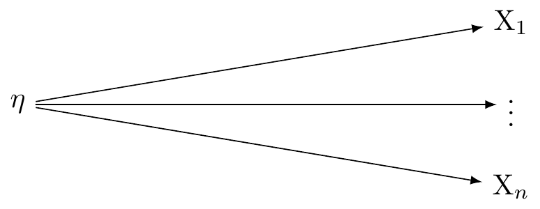
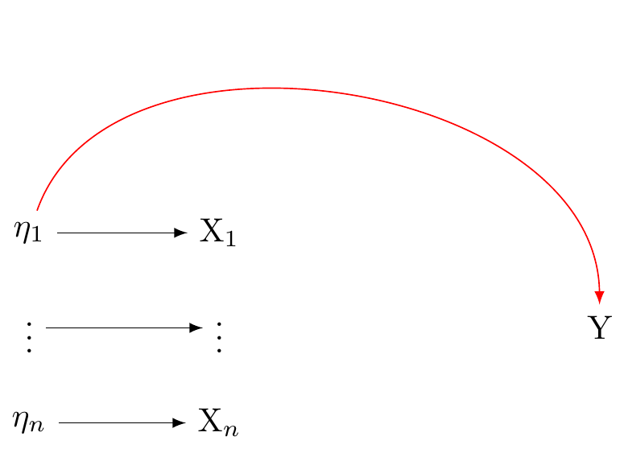

Fischer, Ronald, and Johannes A Karl. 2019. “A Primer to (Cross-Cultural) Multi-Group Invariance Testing Possibilities in r.”Frontiers in Psychology, 1507.
Vijver, Fons J. R. van de, Kwok Leung, Velichko H. Fetvadjiev, Jia He, and Johnny R. J. Fontaine. 2021. Edited by Velichko H. Fetvadjiev, Jia He, and Johnny R. J. Fontaine. 2nd ed. Culture and Psychology 116. Cambridge: Cambridge University Press. https://doi.org/10.1017/9781107415188.
He, Jia, and Fons van de Vijver. 2012. “Bias and Equivalence in Cross-Cultural Research.”Online Readings in Psychology and Culture 2 (2). https://doi.org/10.9707/2307-0919.1111.
Harkness, J. [et al]. 2003. “Questionnaire Translation.” In Cross-Cultural Survey Methods, 35–56. NJ: Wiley.
Lab
R exercises focusing on measurement theory applications and graphing
Overview
By the conclusion of our session, you will gain proficiency in:
Exploratory Factor Analysis,
Confirmatory Factor Analysis (CFA),
Multigroup Confirmatory Factor Analysis,
Partial Invariance (configural, metric, and scalar equivalence)
We will learn these concepts by doing an analysis.
Focus on Kessler-6 Anxiety
The code below will:
Load required packages.
Select the Kessler 6 items
Check whether there is sufficient correlation among the variables to support factor analysis.
Select A Scale To Validate: Kessler 6 Distress
# get synthetic datalibrary(margot)library(tidyverse)library(performance)# update margot# uncomment# devtools::install_github("go-bayes/margot")# select the columns of the kesser-6 need. dt_only_k6 <- df_nz |>filter(wave ==2018) |>select( kessler_depressed, kessler_effort, kessler_hopeless, kessler_worthless, kessler_nervous, kessler_restless )# check factor structureperformance::check_factorstructure(dt_only_k6)
# Is the data suitable for Factor Analysis?
- Sphericity: Bartlett's test of sphericity suggests that there is sufficient significant correlation in the data for factor analysis (Chisq(15) = 50402.32, p < .001).
- KMO: The Kaiser, Meyer, Olkin (KMO) overall measure of sampling adequacy suggests that data seems appropriate for factor analysis (KMO = 0.87). The individual KMO scores are: kessler_depressed (0.85), kessler_effort (0.90), kessler_hopeless (0.86), kessler_worthless (0.85), kessler_nervous (0.90), kessler_restless (0.88).
Practical Definitions of the Kessler-6 Items
The df_nz is loaded with the margot package. It is a synthetic dataset.
The Kessler-6 is used as a diagnostic screening tool for depression for physicians in New Zealand
Kessler, R. C., G. Andrews, L. J. Colpe, E. Hiripi, D. K. Mroczek, S.-L. T. Normand, E. E. Walters, and A. M. Zaslavsky. 2002. “Short Screening Scales to Monitor Population Prevalences and Trends in Non-Specific Psychological Distress.”Psychological Medicine 32 (6): 959–76. https://doi.org/10.1017/S0033291702006074.
Kessler, Ronald C., Jennifer Greif Green, Michael J. Gruber, Nancy A. Sampson, Evelyn Bromet, Marius Cuitan, Toshi A. Furukawa, et al. 2010. “Screening for Serious Mental Illness in the General Population with the K6 Screening Scale: Results from the WHO World Mental Health (WMH) Survey Initiative.”International Journal of Methods in Psychiatric Research 19 (S1): 4–22. https://doi.org/10.1002/mpr.310.
The Kessler-6 (K6) is a widely-used diagnostic screening tool designed to identify levels of psychological distress that may indicate mental health disorders such as depression and anxiety. Physicians in New Zealand to screen patients quickly (krynen2013measuring?). Each item on the Kessler-6 asks respondents to reflect on their feelings and behaviors over the past 30 days, with responses provided on a five-point ordinal scale:
“…you feel hopeless”
Interpretation: This item measures the frequency of feelings of hopelessness. It assesses a core symptom of depression, where the individual perceives little or no optimism about the future.
“…you feel so depressed that nothing could cheer you up”
Interpretation: This statement gauges the depth of depressive feelings and the inability to gain pleasure from normally enjoyable activities, a condition known as anhedonia.
“…you feel restless or fidgety”
Interpretation: This item evaluates agitation and physical restlessness, which are common in anxiety disorders but can also be present in depressive states.
“…you feel that everything was an effort”
Interpretation: This query assesses feelings of fatigue or exhaustion with everyday tasks, reflecting the loss of energy that is frequently a component of depression.
“…you feel worthless”
Interpretation: This item measures feelings of low self-esteem or self-worth, which are critical indicators of depressive disorders.
“…you feel nervous”
Interpretation: This question is aimed at identifying symptoms of nervousness or anxiety, helping to pinpoint anxiety disorders.
Response Options
The ordinal response options provided for the Kessler-6 are designed to capture the frequency of these symptoms, which is crucial for assessing the severity and persistence of psychological distress:
1. “None of the time”: The symptom was not experienced at all.
2. “A little of the time”: The symptom was experienced infrequently.
3. “Some of the time”: The symptom was experienced occasionally.
4. “Most of the time”: The symptom was experienced frequently.
5. “All of the time”: The symptom was constantly experienced.
In clinical practice, higher scores on the Kessler-6 are indicative of greater distress and a higher likelihood of a mental health disorder. Physicians use a sum score of 13 to decide on further diagnostic evaluations or immediate therapeutic interventions.
The simplicity and quick administration of the Kessler-6 make it an effective tool for primary care settings in New Zealand, allowing for the early detection and management of mental health issues. Let’s stop to consider this measure. Do the items in this scale cohere? Do they all relate to depression? Might we quantitatively evaluate “coherence” in this scale?
Exploratory Factor Analysis
We employ performance::check_factorstructure() to evaluate the data’s suitability for factor analysis. Two tests are reported:
Bartlett’s Test of Sphericity
Bartlett’s Test of Sphericity is used in psychometrics to assess the appropriateness of factor analysis for a dataset. It tests the hypothesis that the observed correlation matrix of is an identity matrix, which would suggest that all variables are orthogonal (i.e., uncorrelated) and therefore, factor analysis is unlikely to be appropriate. (Appendix A.)
The outcome:
Chi-square (Chisq): 50402.32 with Degrees of Freedom (15) and a p-value < .001
This highly reliable result (p < .001) confirms that the observed correlation matrix is not an identity matrix, substantiating the factorability of the dataset.
Kaiser-Meyer-Olkin (KMO) Measure
The KMO test assesses sampling adequacy by comparing the magnitudes of observed correlation coefficients to those of partial correlation coefficients. A KMO value nearing 1 indicates appropriateness for factor analysis. The results are:
Overall KMO: 0.87
This value suggests good sampling adequacy, indicating that the sum of partial correlations is relatively low compared to the sum of correlations, thus supporting the potential for distinct and reliable factors.
Each item’s KMO value exceeds the acceptable threshold of 0.5,so suitabale for factor analysis.
Explore Factor Structure
The following R code allows us to perform exploratory factor analysis (EFA) on the Kessler 6 (K6) scale data, assuming three latent factors.
# exploratory factor analysis# explore a factor structure made of 3 latent variableslibrary("psych")library("parameters")# do efaefa <- psych::fa(dt_only_k6, nfactors =3) |>model_parameters(sort =TRUE, threshold ="max")print( efa )
# Rotated loadings from Factor Analysis (oblimin-rotation)
Variable | MR3 | MR1 | MR2 | Complexity | Uniqueness
----------------------------------------------------------------
kessler_hopeless | 0.79 | | | 1.00 | 0.32
kessler_worthless | 0.79 | | | 1.01 | 0.34
kessler_depressed | | 0.99 | | 1.00 | 4.98e-03
kessler_restless | | | 0.72 | 1.03 | 0.47
kessler_nervous | | | 0.43 | 1.91 | 0.57
kessler_effort | | | 0.38 | 2.00 | 0.53
The 3 latent factors (oblimin rotation) accounted for 62.94% of the total variance of the original data (MR3 = 28.20%, MR1 = 17.56%, MR2 = 17.18%).
# Rotated loadings from Factor Analysis (oblimin-rotation)
Variable | MR3 | MR1 | MR2 | Complexity | Uniqueness
----------------------------------------------------------------
kessler_hopeless | 0.79 | | | 1.00 | 0.32
kessler_worthless | 0.79 | | | 1.01 | 0.34
kessler_depressed | | 0.99 | | 1.00 | 4.98e-03
kessler_restless | | | 0.72 | 1.03 | 0.47
kessler_nervous | | | 0.43 | 1.91 | 0.57
kessler_effort | | | 0.38 | 2.00 | 0.53
The 3 latent factors (oblimin rotation) accounted for 62.94% of the total variance of the original data (MR3 = 28.20%, MR1 = 17.56%, MR2 = 17.18%).
What is “Rotation”?
In factor analysis, rotation is a mathematical technique applied to the factor solution to make it more interpretable. Rotation is like adjusting the angle of a camera to get a better view. When we rotate the factors, we are not changing the underlying data, just how we are looking at it, to make the relationships between variables and factors clearer and more meaningful.
The main goal of rotation is to achieve a simpler and more interpretable factor structure. This simplification is achieved by making the factors as distinct as possible, by aligning them closer with specific variables, which makes it easier to understand what each factor represents. Think of orthogonal rotation like organising books on a shelf so that each book only belongs to one category. Each category (factor) is completely independent of the others.
There are two types:
Orthogonal rotations (such as Varimax), which assume that the factors are uncorrelated and keep the axes at 90 degrees to each other. This is useful when we assume that the underlying factors are independent.
Oblique rotations (such as Oblimin), which allow the factors to correlate. Returning to our analogy, imagine a more complex library system where some categories of books overlap; for example, “history” might overlap with “political science”. Oblique rotation recognises and allows these overlaps.This is more realistic in psychological and social sciences, … here, we believe that stress and anxiety might naturally correlate with each other, so Oblique rotation is a better option.
Results
Using oblimin rotation, the items loaded as follows on the three factors:
MR3: Strongly associated with ‘kessler_hopeless’ (0.79) and ‘kessler_worthless’ (0.79). This factor might be capturing aspects related to feelings of hopelessness and worthlessness, often linked with depressive affect.
MR1: Mostly linked with ‘kessler_depressed’ (0.99), suggesting this factor represents core depressive symptoms.
MR2: Includes ‘kessler_restless’ (0.72), ‘kessler_nervous’ (0.43), and ‘kessler_effort’ (0.38). This factor seems to encompass symptoms related to anxiety and agitation.
The complexity values indicate the number of factors each item loads on “significantly.” A complexity near 1.00 suggests that the item predominantly loads on a single factor, which is seen with most of the items except for ‘kessler_nervous’ and ‘kessler_effort’, which show higher complexity and thus share variance with more than one factor.
Uniqueness values represent the variance in each item not explained by the common factors. Lower uniqueness values for items like ‘kessler_depressed’ indicate that the factor explains most of the variance for that item.
Variance Explained
The three factors together account for 62.94% of the total variance in the data, distributed as follows:
MR3: 28.20%
MR1: 17.56%
MR2: 17.18%
This indicates a substantial explanation of the data’s variance by the model, with the highest contribution from the factor associated with hopelessness and worthlessness.
Consensus View?
There are different algorithms for assessing the factor structure. The performance package allows us to consider a ‘consensus’ view.
Code
n <-n_factors(dt_only_k6)n
# Method Agreement Procedure:
The choice of 1 dimensions is supported by 8 (50.00%) methods out of 16 (Optimal coordinates, Acceleration factor, Parallel analysis, Kaiser criterion, Scree (SE), Scree (R2), VSS complexity 1, Velicer's MAP).
Code
# plotplot(n) +theme_classic()
Output:
The choice of 1 dimensions is supported by 8 (50.00%) methods out of 16 (Optimal coordinates, Acceleration factor, Parallel analysis, Kaiser criterion, Scree (SE), Scree (R2), VSS complexity 1, Velicer’s MAP).
The result indicates that a single dimension is supported by half of the methods used (8 out of 16). However science isn’t a matter of voting. Also, does it make sense that there is one latent factor here? Let’s press on…
Confirmatory Factor Analysis (ignoring groups)
CFA to validate the hypothesised factor structures derived from EFA.
One-factor model: assumes all items measure a single underlying construct.
Two-factor model: assumes two distinct constructs measured by the items.
Three-factor model: assumes three distinct constructs measured by the items.
Steps are:
1. Data Partition
First, we take the dataset (dt_only_k6) and partition it into training and testing sets. This division helps in validating the model built on the training data against an unseen test set; this enhances robustness for the factor analysis findings.
# first partition the data part_data <- datawizard::data_partition(dt_only_k6, traing_proportion = .7, seed =123)# set up training datatraining <- part_data$p_0.7test <- part_data$test# one factor modelstructure_k6_one <- psych::fa(training, nfactors =1) |>efa_to_cfa()# two factor model modelstructure_k6_two <- psych::fa(training, nfactors =2) |>efa_to_cfa()# three factor modelstructure_k6_three <- psych::fa(training, nfactors =3) %>%efa_to_cfa()# inspect modelsstructure_k6_one
One-Factor Model: All items are linked to a single factor (MR1).
Two-Factor Model:
MR1 is linked with kessler_depressed, kessler_hopeless, and kessler_worthless, suggesting these items might represent a more depressive aspect of distress.
MR2 is associated with kessler_effort, kessler_nervous, and kessler_restless, which could indicate a different aspect, perhaps related to anxiety or agitation.
Three-Factor Model:
MR1 includes kessler_depressed, kessler_effort, kessler_hopeless, and kessler_worthless, indicating a broad factor possibly encompassing overall distress.
MR2 consists solely of kessler_effort.
MR3 includes kessler_nervous + kessler_restless, which might imply these are distinctivene from other distress components.
Do these results make sense? Note they are different from the Exploratory Factor Analysis. Why might that be?
Next we perform the confirmatory factor analysis itself…
# fit and compare models# one latent modelone_latent <-suppressWarnings(lavaan::cfa(structure_k6_one, data = test))# two latents modeltwo_latents <-suppressWarnings(lavaan::cfa(structure_k6_two, data = test))# three latents modelthree_latents <-suppressWarnings(lavaan::cfa(structure_k6_three, data = test))# compare modelscompare <- performance::compare_performance(one_latent, two_latents, three_latents, verbose =FALSE)# select cols we wantkey_columns_df <- compare[, c("Model", "Chi2", "Chi2_df", "CFI", "RMSEA", "RMSEA_CI_low", "RMSEA_CI_high", "AIC", "BIC")]# view as html tableas.data.frame(key_columns_df) |>kbl(format ="markdown")
Model
Chi2
Chi2_df
CFI
RMSEA
RMSEA_CI_low
RMSEA_CI_high
AIC
BIC
lavaan
805.47732
14
0.9468004
0.0985415
0.0928176
0.1043876
195671.0
195764.3
lavaan
161.24069
13
0.9900359
0.0442564
0.0382928
0.0504917
195028.7
195128.8
lavaan
80.53628
12
0.9953933
0.0313209
0.0250361
0.0379798
194950.0
195056.7
Metrics:
Chi2 (Chi-Square Test): A lower Chi2 value indicates a better fit of the model to the data.
df (Degrees of Freedom): Reflects the model complexity.
CFI (Comparative Fit Index): Values closer to 1 indicate a better fit. A value above 0.95 is generally considered to indicate a good fit.
RMSEA (Root Mean Square Error of Approximation): values less than 0.05 indicate a good fit, and values up to 0.08 are acceptable.
AIC (Akaike Information Criterion) and BIC (Bayesian Information Criterion): lower values are better, indicating a more parsimonious model, with the BIC imposing a penalty for model complexity.
Model Selection:
What do you think?
The Three Latents Model shows the best fit across all indicators, having the lowest Chi2, RMSEA, and the highest CFI. It also has the lowest AIC and BIC scores, suggesting it not only fits well but is also the most parsimonious among the tested models.
But…
The CFI for the two-factor model is 0.990, which is close to 1 and suggests a very good fit to the data. This is superior to the one-factor model (CFI = 0.9468) and slightly less than the three-factor model (CFI = 0.9954). A CFI value closer to 1 indicates a better fit of the model to the data.
Root Mean Square Error of Approximation (RMSEA): The two-factor model has an RMSEA of 0.0443, which is within the excellent fit range (below 0.05). It significantly improves upon the one-factor model’s RMSEA of 0.0985 and is only slightly worse than the three-factor model’s 0.0313.
**BIC* isn’t much different, So
We might say the two-factor model strikes a balance between simplicity and model fit. It has fewer factors than the three-factor model, making it potentially easier to interpret while still capturing the variance in the data.
Look at the items. What do you think?
Does Anxiety appear to differ from Depression?
Measurement Invariance in Multi-group Confirmatory Factor Analysis
When we use tools like surveys or tests to measure psychological constructs (like distress, intelligence, satisfaction), we often need to ensure that these tools work similarly across different groups of people. This is crucial for fair comparisons. Think of it as ensuring that a ruler measures inches or centimeters the same way, whether you are in Auckland or Wellington.
Levels of Measurement Invariance
Measurement invariance tests how consistently a measure operates across different groups, such as ethnic or gender groups. Consider how we can understand it through the K6 Distress Scale applied to different demographic groups in New Zealand:
Configural Invariance
What it means: The measure’s structure is the same across groups. Imagine you have a toolkit; configural invariance means that everyone has the same set of tools (screwdrivers, hammers, wrenches) in their kits.
Application: For the K6 Distress Scale, both Māori and New Zealand Europeans use the same six questions to gauge distress. However, how strongly each question predicts distress can vary between the groups. (Not we are using “prediction” here – we are only assessessing associations.)
Metric Invariance
What it means: The strength of the relationship between each tool (question) and the construct (distress) is consistent across groups. If metric invariance holds, turning a screw (answering a question about feeling nervous) tightens the screw by the same amount no matter who uses the screwdriver.
Application: A unit change in the latent distress factor affects scores on questions (like feeling nervous or hopeless) equally for Māori and New Zealand Europeans.
Scalar Invariance
What it means: Beyond having the same tools and relationships, everyone starts from the same baseline. If scalar invariance holds. It is like ensuring that every screwdriver is calibrated to the same torque setting before being used.
Application: The actual scores on the distress scale mean the same thing across different groups. If a Māori scores 15 and a New Zealander of European descent scores 15, both are experiencing a comparable level of distress.
Concept of “Partial Invariance”
Sometimes, not all conditions for full metric or scalar invariance are met, which could hinder meaningful comparisons across groups. This is where the concept of “partial invariance” comes into play.
Partial Invariance occurs when invariance holds for some but not all items of the scale across groups. Imagine if most, but not all, tools in the kits behaved the same way across different groups. If sufficient items (tools) exhibit invariance, the measure might still be usable for certain comparisons.
Metric Partial Invariance: This might mean that while most items relate similarly to the underlying factor across groups, one or two do not. Researchers might decide that there’s enough similarity to proceed with comparisons of relationships (correlations) but should proceed with caution.
Scalar Partial Invariance: Here, most but not all items show the same intercepts across groups. It suggests that while comparisons of the construct means can be made, some scores might need adjustments or nuanced interpretation.
In practical terms, achieving partial invariance in your analysis allows for some comparisons but signals a need for careful interpretation and potentially more careful analysis. For instance, if partial scalar invariance is found on the K6 Distress Scale, researchers might compare overall distress levels between Māori and New Zealand Europeans but should acknowledge that differences in certain item responses might reflect measurement bias rather than true differences in distress.
The upshot is that understanding these levels of invariance helps ensure that when we compare mental health or other constructs across different groups, we are making fair and meaningful comparisons. Partial invariance offers a flexible approach to handle real-world data where not all conditions are perfectly met. This approach allows researchers to acknowledge and account for minor discrepancies while still extracting valuable insights from their analyses.
The following script runs multi-group confirmatory factor analysis (MG-CFA) to assess the invariance of the Kessler 6 (K6) distress scale across two ethnic groups: European New Zealanders and Māori.
# select needed columns plus 'ethnicity'# filter dataset for only 'euro' and 'maori' ethnic categoriesdt_eth_k6_eth <- df_nz |>filter(wave ==2018) |>filter(eth_cat =="euro"| eth_cat =="maori") |>select(kessler_depressed, kessler_effort, kessler_hopeless, kessler_worthless, kessler_nervous, kessler_restless, eth_cat)# partition the dataset into training and test subsets# stratify by ethnic category to ensure balanced representationpart_data_eth <- datawizard::data_partition(dt_eth_k6_eth, training_proportion = .7, seed =123, group ="eth_cat")training_eth <- part_data_eth$p_0.7test_eth <- part_data_eth$test# configural invariance models#run CFA models specifying one, two, and three latent variables without constraining across groupsone_latent_eth_configural <-suppressWarnings(lavaan::cfa(structure_k6_one, group ="eth_cat", data = test_eth))two_latents_eth_configural <-suppressWarnings(lavaan::cfa(structure_k6_two, group ="eth_cat", data = test_eth))three_latents_eth_configural <-suppressWarnings(lavaan::cfa(structure_k6_three, group ="eth_cat", data = test_eth))# compare model performances for configural invariancecompare_eth_configural <- performance::compare_performance(one_latent_eth_configural, two_latents_eth_configural, three_latents_eth_configural, verbose =FALSE)compare_eth_configural
# metric invariance models# run CFA models holding factor loadings equal across groupsone_latent_eth_metric <-suppressWarnings(lavaan::cfa(structure_k6_one, group ="eth_cat", group.equal ="loadings", data = test_eth))two_latents_eth_metric <-suppressWarnings(lavaan::cfa(structure_k6_two, group ="eth_cat", group.equal ="loadings", data = test_eth))three_latents_eth_metric <-suppressWarnings(lavaan::cfa(structure_k6_three, group ="eth_cat",group.equal ="loadings", data = test_eth))# compare model performances for metric invariancecompare_eth_metric <- performance::compare_performance(one_latent_eth_metric, two_latents_eth_metric, three_latents_eth_metric, verbose =FALSE)# scalar invariance models# run CFA models holding factor loadings and intercepts equal across groupsone_latent_eth_scalar <-suppressWarnings(lavaan::cfa(structure_k6_one, group ="eth_cat", group.equal =c("loadings","intercepts"), data = test_eth))two_latents_eth_scalar <-suppressWarnings(lavaan::cfa(structure_k6_two, group ="eth_cat", group.equal =c("loadings","intercepts"), data = test_eth))three_latents_eth_scalar <-suppressWarnings(lavaan::cfa(structure_k6_three, group ="eth_cat",group.equal =c("loadings","intercepts"), data = test_eth))# Compare model performances for scalar invariancecompare_eth_scalar <- compare_eth_scalar <- performance::compare_performance(one_latent_eth_scalar, two_latents_eth_scalar, three_latents_eth_scalar, verbose =FALSE)
The table represents the comparison of three multi-group confirmatory factor analysis (CFA) models conducted to test for configural invariance across different ethnic categories (eth_cat). Configural invariance refers to whether the pattern of factor loadings is the same across groups. It’s the most basic form of measurement invariance.
Looking at the results, we can draw the following conclusions:
Chi2 (Chi-square): a lower value suggests a better model fit. In this case, the three looks best
GFI (Goodness of Fit Index) and AGFI (Adjusted Goodness of Fit Index): These values range from 0 to 1, with values closer to 1 suggesting a better fit. All models are close.
NFI (Normed Fit Index), NNFI (Non-Normed Fit Index, also called TLI), CFI (Comparative Fit Index): These range from 0 to 1, with values closer to 1 suggesting a better fit. The two and three factors models have the highest values.
RMSEA (Root Mean Square Error of Approximation): lower values are better, with values below 0.05 considered good and up to 0.08 considered acceptable.Only two and three meet this threshold.
RMR (Root Mean Square Residual) and SRMR (Standardized Root Mean Square Residual): three is best.
RFI (Relative Fit Index), PNFI (Parsimonious Normed Fit Index), IFI (Incremental Fit Index), RNI (Relative Noncentrality Index): These range from 0 to 1, with values closer to 1 suggesting a better fit. Again three is the winner.
AIC (Akaike Information Criterion) and BIC (Bayesian Information Criterion): The three factor model win’s again.
Analysis of the Results:
One Latent Model: shows the poorest fit among the models with a high RMSEA and the lowest CFI. The model’s Chi-squared value is also significantly high, indicating a substantial misfit with the observed data.
Two Latents Model: displays a much improved fit compared to the one latent model, as evident from its much lower Chi-squared value, lower RMSEA, and higher CFI. This suggests that two factors might be necessary to adequately represent the underlying structure in the data.
Three Latents Model: provides the best fit metrics among the three configurations.
This table presents the results of a multi-group confirmatory factor analysis (CFA) conducted to test metric equivalence (also known as weak measurement invariance) across different ethnic categories (eth_cat).
The three factor model wins again.
Scalar Equivalence
# view as html tablecompare_eth_scalar <- compare_eth_scalar[, c("Name", "Chi2", "Chi2_df","RFI", "NNFI", "CFI","GFI","RMSEA", "RMSEA_CI_low", "RMSEA_CI_high", "AIC", "BIC")]as.data.frame(compare_eth_scalar)|>kbl(format ="markdown")
Name
Chi2
Chi2_df
RFI
NNFI
CFI
GFI
RMSEA
RMSEA_CI_low
RMSEA_CI_high
AIC
BIC
one_latent_eth_scalar
669.8690
40
0.9464990
0.9495325
0.9519357
0.9854887
0.0770781
0.0720058
0.0822646
175817.2
176014.4
two_latents_eth_scalar
177.4574
36
0.9842521
0.9874065
0.9892056
0.9961614
0.0385033
0.0329544
0.0442492
175332.8
175556.3
three_latents_eth_scalar
128.2153
32
0.9871996
0.9903636
0.9926580
0.9971838
0.0336809
0.0277002
0.0398839
175291.5
175541.4
Overall, it seems that we have good evidence for the three-factor model of Kessler-6, but two-factor is close.
Consider: when might we prefer a two-factor model? When might we prefer a three-factor model? When might we prefer a one-factor model?
Conclusion: Understanding the Limits of Association in Factor Models
This discussion of measurement invariance across different demographic groups underscores the reliance of factor models on the underlying associations in the data. It is crucial to remember that these models are fundamentally descriptive, not prescriptive; they organize the observed data into a coherent structure based on correlations and assumed relationships among variables.
Next week, we will consider the causal assumptions inherent in these factor models. Factor analysis assumes that the latent variables (factors) causally influence the observed indicators. This is a stron assumption that can profoundly affect the interpretation of the results. Understanding and critically evaluating our assumptions is important when applying factor analysis to real-world scenarios.
The assumption that latent variables cause the observed indicators, rather than merely being associated with them, suggests a directional relationship that can affect decisions made based on the analysis. For instance, if we believe that a latent construct like psychological distress causally influences responses on the K6 scale, interventions might be designed to target this distress directly. However, if the relationship is more complex or bidirectional, such straightforward interventions might not be as effective.
Next week’s session on causal assumptions will provide a deeper insight into how these assumptions shape our interpretations and the strategies we derive from factor models. This understanding is critical for applying these models appropriately and effectively in psychological research and practice.
Lab assignment
Using the code above, perform MG-CFA on personality measures using the df_nz data set.
Appendix A. What is a Correlation Matrix?
A correlation matrix is a square matrix that contains the Pearson correlation coefficients between each pair of variables within a dataset. Each element in the matrix represents the correlation between two variables.
Structure
Dimensions: the matrix is p \times p where p is the number of variables.
Diagonal Elements: all diagonal elements are 1, because each variable has a perfect correlation with itself.
Off-Diagonal Elements: These elements, denoted as r_{ij}, are the Pearson correlation coefficients between the i^{th} and j^{th} variables, ranging from -1 to +1.
r_{ij} = 1 indicates a perfect positive linear relationship.
r_{ij} = -1 indicates a perfect negative linear relationship.
r_{ij} = 0 indicates no linear relationship.
Properties
Symmetry: the matrix is symmetric around the diagonal, meaning r_{ij} = r_{ji}.
Real Values: all entries are real numbers.
Bounded Values: values are constrained between -1 and 1, inclusive.
Use
Exploring relationships between variables.
Conducting factor analysis to identify latent factors, as here.
library(tidyr)#plotcor_matrix_df <-as.data.frame(cor_matrix) # convert matrix to data framecor_matrix_df$variable <-rownames(cor_matrix_df) # add a new column for rownameslong_cor_matrix <- tidyr::pivot_longer(cor_matrix_df, cols =-variable, names_to ="comparison", values_to ="correlation")ggplot(long_cor_matrix, aes(x = variable, y = comparison, fill = correlation)) +geom_tile() +scale_fill_gradient2(low ="blue", high ="red", mid ="white", midpoint =0, limit =c(-1,1)) +theme_minimal() +labs(x ="Variables", y ="Variables", fill ="Correlation") +theme(axis.text.x =element_text(angle =45, hjust =1))
Packages
report::cite_packages()
- Barrett M (2021). _ggokabeito: 'Okabe-Ito' Scales for 'ggplot2' and 'ggraph'_. R package version 0.1.0, <https://CRAN.R-project.org/package=ggokabeito>.
- Bulbulia J (2024). _margot: MARGinal Observational Treatment-effects_. doi:10.5281/zenodo.10907724 <https://doi.org/10.5281/zenodo.10907724>, R package version 0.3.1.0 Functions to obtain MARGinal Observational Treatment-effects from observational data., <https://go-bayes.github.io/margot/>.
- Chang W (2023). _extrafont: Tools for Using Fonts_. R package version 0.19, <https://CRAN.R-project.org/package=extrafont>.
- Firke S (2024). _janitor: Simple Tools for Examining and Cleaning Dirty Data_. R package version 2.2.1, <https://CRAN.R-project.org/package=janitor>.
- Greifer N (2024). _WeightIt: Weighting for Covariate Balance in Observational Studies_. R package version 1.3.2, <https://CRAN.R-project.org/package=WeightIt>.
- Grolemund G, Wickham H (2011). "Dates and Times Made Easy with lubridate." _Journal of Statistical Software_, *40*(3), 1-25. <https://www.jstatsoft.org/v40/i03/>.
- Lüdecke D, Ben-Shachar M, Patil I, Makowski D (2020). "Extracting, Computing and Exploring the Parameters of Statistical Models using R." _Journal of Open Source Software_, *5*(53), 2445. doi:10.21105/joss.02445 <https://doi.org/10.21105/joss.02445>.
- Lüdecke D, Ben-Shachar M, Patil I, Waggoner P, Makowski D (2021). "performance: An R Package for Assessment, Comparison and Testing of Statistical Models." _Journal of Open Source Software_, *6*(60), 3139. doi:10.21105/joss.03139 <https://doi.org/10.21105/joss.03139>.
- Müller K, Wickham H (2023). _tibble: Simple Data Frames_. R package version 3.2.1, <https://CRAN.R-project.org/package=tibble>.
- Patil I, Makowski D, Ben-Shachar M, Wiernik B, Bacher E, Lüdecke D (2022). "datawizard: An R Package for Easy Data Preparation and Statistical Transformations." _Journal of Open Source Software_, *7*(78), 4684. doi:10.21105/joss.04684 <https://doi.org/10.21105/joss.04684>.
- Pedersen T (2024). _patchwork: The Composer of Plots_. R package version 1.3.0, <https://CRAN.R-project.org/package=patchwork>.
- R Core Team (2024). _R: A Language and Environment for Statistical Computing_. R Foundation for Statistical Computing, Vienna, Austria. <https://www.R-project.org/>.
- Rosseel Y (2012). "lavaan: An R Package for Structural Equation Modeling." _Journal of Statistical Software_, *48*(2), 1-36. doi:10.18637/jss.v048.i02 <https://doi.org/10.18637/jss.v048.i02>.
- VanderWeele TJ, Ding P (2011). "Sensitivity analysis in observational research: introducing the E-value." _Annals of Internal Medicine_, *167*(4), 268-274. Mathur MB, VanderWeele TJ (2019). "Sensitivity analysis for unmeasured confounding in meta-analyses." _Journal of the American Statistical Association>_. Smith LH, VanderWeele TJ (2019). "Bounding bias due to selection." _Epidemiology_.
- Wickham H (2016). _ggplot2: Elegant Graphics for Data Analysis_. Springer-Verlag New York. ISBN 978-3-319-24277-4, <https://ggplot2.tidyverse.org>.
- Wickham H (2023). _forcats: Tools for Working with Categorical Variables (Factors)_. R package version 1.0.0, <https://CRAN.R-project.org/package=forcats>.
- Wickham H (2023). _stringr: Simple, Consistent Wrappers for Common String Operations_. R package version 1.5.1, <https://CRAN.R-project.org/package=stringr>.
- Wickham H, Averick M, Bryan J, Chang W, McGowan LD, François R, Grolemund G, Hayes A, Henry L, Hester J, Kuhn M, Pedersen TL, Miller E, Bache SM, Müller K, Ooms J, Robinson D, Seidel DP, Spinu V, Takahashi K, Vaughan D, Wilke C, Woo K, Yutani H (2019). "Welcome to the tidyverse." _Journal of Open Source Software_, *4*(43), 1686. doi:10.21105/joss.01686 <https://doi.org/10.21105/joss.01686>.
- Wickham H, François R, Henry L, Müller K, Vaughan D (2023). _dplyr: A Grammar of Data Manipulation_. R package version 1.1.4, <https://CRAN.R-project.org/package=dplyr>.
- Wickham H, Henry L (2023). _purrr: Functional Programming Tools_. R package version 1.0.2, <https://CRAN.R-project.org/package=purrr>.
- Wickham H, Hester J, Bryan J (2024). _readr: Read Rectangular Text Data_. R package version 2.1.5, <https://CRAN.R-project.org/package=readr>.
- Wickham H, Vaughan D, Girlich M (2024). _tidyr: Tidy Messy Data_. R package version 1.3.1, <https://CRAN.R-project.org/package=tidyr>.
- William Revelle (2024). _psych: Procedures for Psychological, Psychometric, and Personality Research_. Northwestern University, Evanston, Illinois. R package version 2.4.12, <https://CRAN.R-project.org/package=psych>.
- Xie Y (2024). _knitr: A General-Purpose Package for Dynamic Report Generation in R_. R package version 1.49, <https://yihui.org/knitr/>. Xie Y (2015). _Dynamic Documents with R and knitr_, 2nd edition. Chapman and Hall/CRC, Boca Raton, Florida. ISBN 978-1498716963, <https://yihui.org/knitr/>. Xie Y (2014). "knitr: A Comprehensive Tool for Reproducible Research in R." In Stodden V, Leisch F, Peng RD (eds.), _Implementing Reproducible Computational Research_. Chapman and Hall/CRC. ISBN 978-1466561595.
- Xie Y (2024). _tinytex: Helper Functions to Install and Maintain TeX Live, and Compile LaTeX Documents_. R package version 0.54, <https://github.com/rstudio/tinytex>. Xie Y (2019). "TinyTeX: A lightweight, cross-platform, and easy-to-maintain LaTeX distribution based on TeX Live." _TUGboat_, *40*(1), 30-32. <https://tug.org/TUGboat/Contents/contents40-1.html>.
- Zhu H (2024). _kableExtra: Construct Complex Table with 'kable' and Pipe Syntax_. R package version 1.4.0, <https://CRAN.R-project.org/package=kableExtra>.
Harkness, Janet A, Fons JR Van de Vijver, and Timothy P Johnson. 2003. “Questionnaire Design in Comparative Research.”Cross-Cultural Survey Methods, 19–34.
Key concepts
The Formative Model in Factor Analysis
The Reflective Model in Factor Analysis
How to use causal Diagrams to evaluate assumptions.
Important
Understanding causal assumptions of measurement theory
Guidance on your final assessment.
Overview
By the end of this lecture you will:
Understand the causal assumptions implied by the factor analytic interpretation of the formative and reflective models.
Be able to distinguish between statistical and structural interpretations of these models.
Understand why Vanderweele thinks consistent causal estimation is possible using the theory of multiple versions of treatments for constructs with multiple indicators
Two ways of thinking about measurement in psychometric research.
In psychometric research, formative and reflective models describe the relationship between latent variables and their respective indicators. VanderWeele discusses this in the assigned reading for this week (Tyler J. VanderWeele 2022).
VanderWeele, Tyler J. 2022. “Constructed Measures and Causal Inference: Towards a New Model of Measurement for Psychosocial Constructs.”Epidemiology 33 (1): 141. https://doi.org/10.1097/EDE.0000000000001434.
Reflective Model (Factor Analysis)
In a reflective measurement model, also known as an effect indicator model, the latent variable is understood to cause the observed variables. In this model, changes in the latent variable cause changes in the observed variables. Each indicator (observed variable) is a ‘reflection’ of the latent variable. In other words, they are effects or manifestations of the latent variable. These relations are presented in Figure 1.
The reflective model may be expressed:
X_i = \lambda_i \eta + \varepsilon_i
Here, X_i is an observed variable (indicator), \lambda_i is the factor loading for X_i, \eta is the latent variable, and \varepsilon_i is the error term associated with X_i. It is assumed that all the indicators are interchangeable and have a common cause, which is the latent variable \eta.
In the conventional approach of factor analysis, the assumption is that a common latent variable is responsible for the correlation seen among the indicators. Thus, any fluctuation in the latent variable should immediately lead to similar changes in the indicators.These assumptions are presented in Figure 1.

Figure 1: Reflective model: assume univariate latent variable η giving rise to indicators X1…X3. Figure adapted from VanderWeele: doi: 10.1097/EDE.0000000000001434
The Formative Model (Factor Analysis)
In a formative measurement model, the observed variables are seen as causing or determining the latent variable. Here again, there is a single latent variable. However this latent variable is taken to be an effect of the underlying indicators. These relations are presented in Figure 2.
The formative model may be expressed:
\eta = \sum_i\lambda_i X_i + \varepsilon
In this equation, \eta is the latent variable, \lambda_i is the weight for X_i (the observed variable), and \varepsilon is the error term. The latent variable \eta is a composite of the observed variables X_i.
In the context of a formative model, correlation or interchangeability between indicators is not required. Each indicator contributes distinctively to the latent variable. As such, a modification in one indicator doesn’t automatically imply a corresponding change in the other indicators.
Figure 2: Formative model:: assume univariate latent variable from which the indicators X1…X3 give rise. Figure adapted from VanderWeele: doi: 10.1097/EDE.0000000000001434
Structural Interpretation of the formative model and reflective models (Factor Analysis)
However, this analysis of reflective and formative models assumed that the latent η was causally efficacious. This may not be the case (VanderWeele 2022)
VanderWeele distinguishes between statistical and structural interpretations of the equations preesented above.
Statistical Model: a mathematical construct that shows how observable variables, also known as indicators, are related to latent or unseen variables. These are presented in the equations above
Structural Model: A structural model refers to the causal assumptions or hypotheses about the relationships among variables in a statistical model. The assumptions of the factor analytic tradition are presented in Figure 2 and Figure 1 are structural models.
We have seen that the reflective model statistically implies that the observed variables (indicators) are reflections or manifestations of the latent variable, expressed as X_i = \lambda_i \eta + \varepsilon_i. However, the factor analytic tradition makes the additional structural assumption that a univariate latent variable is causally efficacious and influences the observed variables, as in: Figure 3 (a).
We have also seen that the formative model statistically implies that the latent variable is formed or influenced by the observed variables, expressed as \eta = \sum_i\lambda_i X_i + \varepsilon. However, the factor analytic tradition makes the additional assumption that the observed variables give rise to a univariate latent variable, as in Figure 3 (b).
The reflective model implies X_i = \lambda_i \eta + \varepsilon_i, which factor analysts take to imply Figure 3 (a).
Figure 3: The formative model implies \eta = \sum_i\lambda_i X_i + \varepsilon, which factor analysts take to imply Figure 3 (b).
Problems with the structural interpretations of the reflective and formative factor models.
While the statistical model X_i = \lambda_i \eta + \varepsilon_i aligns with Figure 3 (a), it also alings with Figure 4. Cross-sectional data, unfortunately, do not provide enough information to discern between these different structural interpretations.
Similarly, the statistical model \eta = \sum_i\lambda_i X_i + \varepsilon agrees with Figure 3 (b) but it also agrees with@fig-dag-reflectiveassumptions-compatible_again. Here too, cross-sectional data cannot decide between these two potential structural interpretations.
There are other, compatible structural interprestations as well. The formative and reflective conceptions of factor analysis are compatible with indicators having causal effects as shown in (fig_dag_multivariate_reality_again?). They are also compatible with a multivariate reality giving rise to multiple indicators as shown in Figure 6.
Figure 4: Formative model is compatible with indicators causing outcome.Figure adapted from VanderWeele: doi: 10.1097/EDE.0000000000001434
Figure 5: Reflective model is compatible with indicators causing the outcome. Figure adapted from VanderWeele: doi: 10.1097/EDE.0000000000001434
Multivariate reality gives rise to the indicators, from which we draw our measures. Figure adapted from VanderWeele: doi: 10.1097/EDE.0000000000001434

Figure 6: Although we take our constructs, A, to be functions of indicators, X, such that, perhaps only one or several of the indicators are efficacious.Figure adapted from VanderWeele: doi: 10.1097/EDE.0000000000001434
VanderWeele’s key observation is this:
While cross-sectional data can provide insights into the relationships between variables, they cannot conclusively determine the causal direction of these relationships.
This results is worrying. The structural assumptions of factor analysis underpin nearly all psychological research. If the cross-sectional data used to derive factor structures cannot decide whether the structural interpretations of factor models are accurate, where does that leave us?
More worrying still, VanderWeele discusses several longitudinal tests for structural interpretations of univariate latent variables that do not pass.
Where does that leave us? In psychology we have heard about a replication crisis. We might describe the reliance on factor models as an aspect of a much larger, and more worrying “causal crisis” (Bulbulia 2023)
Review of the theory of multiple versions of treatment
Multiple Versions of treatment. Heae, A is regarded to bbe a coarseneed version of K
Perhaps not all is lost. VanderWeele looks to the theory of multiple versions of treatment for solace.
Recall, a causal effect is defined as the difference in the expected potential outcome when everyone is exposed (perhaps contrary to fact) to one level of a treatment, conditional on their levels of a confounder, with the expected potential outcome when everyone is exposed to a a different level of a treatement (perhaps contrary to fact), conditional on their levels of a counfounder.
where \delta is the causal estimand on the difference scale (\mathbb{E}[Y^0 - Y^0]).
In causal inference, the multiple versions of treatment theory allows us to handle situations where the treatment isn’t uniform, but instead has several variations. Each variation of the treatment, or “version”, can have a different impact on the outcome. Consistency is not violated because it is redefined: for each version of the treatment, the outcome under that version is equal to the observed outcome when that version is received. Put differently we may think of the indicator A as corresponding to many version of the true treament K. Where conditional independence holds such that there is a absence of confounding for the effect of K on Y given L, we have: Y_k \coprod A|K,L. This states conditional on L, A gives no information about Y once K and L are accounted for. When Y = Y_k if K = k and Y_k is independent of K, condition on L, then A may be thought of as a coarsened indicator of K, as shown in (fig_dag_multiple_version_treatment_dag?). We may estimate consistent causal effects where:
The scenario represents a hypothetical randomised trial where within strata of covariates L, individuals in one group receive a treatment K version randomly assigned from the distribution of K distribution (A = 1, L = l) sub-population. Meanwhile, individuals in the other group receive a randomly assigned K version from (A = 0, L = l)
This theory finds its utility in practical scenarios where treatments seldom resemble each other – we discussed the example of obesity last week (see: (Tyler J. VanderWeele and Hernan 2013)).
VanderWeele, Tyler J, and Miguel A Hernan. 2013. “Causal Inference Under Multiple Versions of Treatment.”Journal of Causal Inference 1 (1): 1–20.
Reflective and formative measurement models may be approached as multiple versions of treatment
Specifically, we substitue K with \eta from the previous section, and compare the measurement response A = a + 1 with A = a. We discover that if the influence of \eta on Y is not confounded given L, then the multiple versions of reality consistent with the reflective and formative statistical models of reality will not lead to biased estimation. \delta retains its interpretability as a comparison in a hypothetical randomised trial in which the distribution of coarsened measures of \eta_A are balanced within levels of the treatment, conditional on \eta_L.
This connection between measurement and the multiple versions of treatment framework provides a hope for consistent causal inference varying reliabilities of measurement.
However, as with the theory of multiple treatments, we might not known how to interpret our results because we don’t know the true relationships between our measured indicators and underlying reality.
How can we do better?
Figure 7: Multiple Versions of treatment applied to measuremen.Figure adapted from VanderWeele: doi: 10.1097/EDE.0000000000001434
VanderWeele’s model of reality
VanderWeele’s article concludes as follows:
A preliminary outline of a more adequate approach to the construction and use of psychosocial measures might thus be summarized by the following propositions, that I have argued for in this article: (1) Traditional univariate reflective and formative models do not adequately capture the relations between the underlying causally relevant phenomena and our indicators and measures. (2) The causally relevant constituents of reality related to our constructs are almost always multidimensional, giving rise both to our indicators from which we construct measures, and also to our language and concepts, from which we can more precisely define constructs. (3) In measure construction, we ought to always specify a definition of the underlying construct, from which items are derived, and by which analytic relations of the items to the definition are made clear. (4) The presumption of a structural univariate reflective model impairs measure construction, evaluation, and use. (5) If a structural interpretation of a univariate reflective factor model is being proposed this should be formally tested, not presumed; factor analysis is not sufficient for assessing the relevant evidence. (6) Even when the causally relevant constituents of reality are multidimensional, and a univariate measure is used, we can still interpret associations with outcomes using theory for multiple versions of treatment, though the interpretation is obscured when we do not have a clear sense of what the causally relevant constituents are. (7) When data permit, examining associations item-by-item, or with conceptually related item sets, may give insight into the various facets of the construct.
A new integrated theory of measurement for psychosocial constructs is needed in light of these points – one that better respects the relations between our constructs, items, indicators, measures, and the underlying causally relevant phenomena. (VanderWeele 2022)
Figure 8: Multivariate reality gives rise to the latent variables.Figure adapted from VanderWeele: doi: 10.1097/EDE.0000000000001434
This seems to me sensible. However, Figure 8 this is not a causal graph. The arrows to not clearly represent causal relations. It leaves me unclear about what to practically do.
Let’s return to the three wave many-outcomes model described in previous weeks. How should we revise this model in light of measurement theory?
How theory of dependent and directed measurement error might be usefully employed to develop a pragmatic responses to construct measurement
By now you are all familiar with The New Zealand Attitudes and Values Study (NZAVS),which is a national probability survey collects a wide range of information, including data on distress, exercise habits, and cultural backgrounds.
Figure 9: Uncorrelated non-differential measurement error does not bias estimates under the null. Note, however, we assume that L is measured with sufficient precision to block the path from A_eta –> L_eta –> Y_eta, which, otherwise, we would assume to be open.
Consider a study that seeks to use this dataset to investigate the effect of regular exercise on psychological distress. In contrast to previous graphs, let us allow for latent reality to affect our measurements, as well as the discrepencies between our measurements and true underlying reality. We shall use Figure 9 as our initial guide.
We represent the true exercise by \eta_A. We represent true psychological distress by \eta_Y. Let \eta_L denote a persons true workload, and assume that this state of work affects both levels of excercise and psychological distress.
To bring the model into contact with measurement theory, Let us describe measurements of these latent true underlying realities as functions of multiple indicators: L_{f(X_1\dots X_n)}, A_{f(X_1\dots X_n)}, and A_{f(X_1\dots X_n)}. These constructs are measured realisations of the underlying true states. We assume that the true states of these variables affect their corresponding measured states, and so draw arrows from \eta_L\rightarrow{L_{f(X_1\dots X_n)}}, \eta_A\rightarrow{A_{f(X_1\dots X_n)}}, \eta_Y\rightarrow{Y_{f(X_1\dots X_n)}}.
We also assume unmeasured sources of error that affect the measurements: U_{L} \rightarrowL_{f(X_1\dots X_n)}, U_{A} \rightarrowA_{f(X_1\dots X_n)}, and U_{Y} \rightarrowY_{f(X_1\dots X_n)}. That is, we allow that our measured indicators may “see as through a mirror, in darkness,” the underlying true reality they hope to capture (Corinthians 13:12). We use U_{L}, U_{A} and U_{Y} to denote the unmeasured sources of error in the measured indicators. These are the unknown, and perhaps unknowable, darkness and mirror.
Allow that the true underlying reality represented by the \eta_{var} may be multivariate. Similarly, allow the true underlying reality represented by \U_{var} is multivariate.
We now have a causal diagramme that more precisely captures VanderWeele’s thinking as presented in Figure 8. In our Figure 9, we have fleshed out \mathcal{R} in a way that may include natural language concepts and scientific language, or constructs, as latent realities and latent unmeasured sources of error in our constructs.
The utility of describing the measurement dynamics using causal graphs is apparrent. We can understand that the measured states, once conditioned upon create collider biases which opens path between the unmeasured sources of error and the true underlying state that gives rise to our measurements. This is depicted by a the arrows U_{var} and from \eta_{var} into each var_{f(X1, X2,\dots X_n)}
Notice: where true unmeasured (multivariate) psycho-physical states are related to true unmeasured (multivariate) sources of error in the measurement of those states, the very act of measurement opens pathways to confounding.
If for each measured construct var_{f(X1, X2,\dots X_n)}, the sources of error U_{var} and the unmeasured consituents of reality that give rise to our measures \eta_{var} are uncorrelated with other variables U\prime_{var} and from \eta\prime_{var} and var\prime_{f(X1, X2,\dots X_n)}, our estimates may be downwardly biased toward the null. However, d-separation is preserved. Where errors are uncorrelated with true latent realities, there is no new pathway that opens information between our exposure and outcome. Consider the relations presented in Figure 10
Figure 10: Measurement error opens an additional pathway to confounding if either there are correlated errors, or a directed effect of the exposure on the errors of measured outcome.
Here,
\eta_L \rightarrow L: We assume that the true workload state affects its measurement. This measurement, however, may be affected by an unmeasured error source, U_{L}. Personal perceptions of workload can introduce this error. For instance, a person may perceive their workload differently based on recent personal experiences or cultural backgrounds. Additionally, unmeasured cultural influences like societal expectations of productivity could shape their responses independently of the true workload state. There may be cultural differences - Americans may verstate; the British may present effortless superiority.
\eta_A \rightarrow A: When it comes to exercise, the true state may affect the measured frequency (questions about exercise are not totally uninformative). However, this measurement is also affected by an unmeasured source of error, which we denote by U_{A}. For example, a cultural shift towards valuing physical health might prompt participants toreport higher activity levels, introducing an error, U_{A}.
\eta_Y \rightarrow Y: We assume questions about distress are not totally uninformative: actual distress affects the measured distress. However this measurement is subject to unmeasured error: U_{Y}. For instance, an increased societal acceptance of mental health might change how distress is reported creating an error, U_{Y}, in the measurement of distress. Such norms, moreover, may change over time.
U_{L} \rightarrow L, U_{A} \rightarrow A, and U_{Y} \rightarrow Y: These edges between the nodes indicate how each unmeasured error source can influence its corresponding measurement, leading to a discrepancy between the true state and the measured state.
U_{L} \rightarrow U_{A} and U_{L} \rightarrow U_{Y}: These relationships indicate that the error in the stress measurement can correlate with those in the exercise and mood measurements. This could stem from a common cultural bias affecting how a participant self-reports across these areas.
\eta_A \rightarrow U_{Y} and \eta_L \rightarrow U_{A}: These relationships indicate that the actual state of one variable can affect the error in another variable’s measurement. For example, a cultural emphasis on physical health leading to increased exercise might, in turn, affect the reporting of distress levels, causing an error, U_{Y}, in the distress measurement. Similarly, if a cultural trend pushes people to work more, it might cause them to over or underestimate their exercise frequency, introducing an error, U_{A}, in the exercise measurement.
Confounding control by baseline measures of exposure and outcome: Dependent Directed Measurement Error in Three-Wave Panels
We propose a three-wave panel design to control confounding. This design adjusts for baseline measurements of both exposure and the outcome.
Understanding this approach in the context of potential directed and correlated measurement errors gives us a clearer picture of its strengths and limitations.
This three-wave panel design incorporates baseline measurements of both exposure and confounders. As a result, any bias that could come from unmeasured sources of measurement errors should be uncorrelated with their baseline effects.
For instance, if individuals have a social desirability bias at the baseline, they would have to develop a different bias unrelated to the initial one for new bias to occur due to correlated unmeasured sources of measurement errors.
However, we cannot completely eliminate the possibility of such new bias development. There could also be potential new sources of bias from directed effects of the exposure on the error term of the outcome, which can often occur due to panel attrition.
To mitigate this risk, we adjust for panel attrition/non-response using methods like multiple imputation. We also consistently perform sensitivity analyses to detect any unanticipated bias.
Despite these potential challenges, it is worth noting that by including measures of both exposure and outcome at baseline, the chances of new confounding are significantly reduced.
Therefore, adopting this practice should be a standard procedure in multi-wave studies as it substantially minimizes the likelihood of introducing novel confounding factors.
Figure 11: TBA
Comment on slow changes
Over long periods of time we can expect additional sources of confounding. Changes in cultural norms and attitudes can occur over the duration of a longitudinal study like the NZAVS, leading to residual confounding. For example, if there is a cultural shift towards increased acceptance of mental health issues, this might change how psychological distress is reported over time, irrespective of baseline responses.
Need for Sensitivity Analysis The Key takehome message is that we must always perform sensitivity analyses because we can never be certain that our confounding control strategy has worked.
Lab: Advice on Your Final Report
Intoduction
Answer the following:
State the Question: is my question clearly stated? If not, state it.
Relevance of the Question: Have I explained its importance? If not, explain.
Subgroup Analysis: Does my question involve a subgroup (e.g., cultural group)? If not, develop a subgroup analysis question.
Causality of the Question: Is my question causal? Briefly explain what this means with reference to the potential outcomes framework.
State how you will use time-series data to address causality.
Define your exposure.
Define your outcome(s)
Explain how the the exposure and outcome is relevant to your question.
Define your causal estimand (see: lecture 9). Hint: it is ATE_g_risk difference = E[Y(1)-(0)|G,L], where G is your multiple-group indicator and L is your set of baseline confounders.
Methods
Consider any ethical implications.
Explain the sample. Provide descriptive statistics
Discuss inclusion criteria.
Discuss how your sample relates to the “source population” (lecture 9.)
Explain NZAVS measures. State the questions used in the items
In your own words describe how the data meet the following assumptions required for causal inference:
Positivity: Can we intervene on the exposure at all levels of the covariates? Use the code I provided to test whether there is change in the exposure from the baseline in the source population(s)
Consistency: Can I interpret what it means to intervene on the exposure?
Exchangeability: Are different versions of the exposure conditionally exchangeable given measured baseline confounders? This requires stating baseline confounders and explaining how they may be related to both the exposure and outcome. As part of this, you must explain why the baseline measure of your exposure and outcome are included as potential confounders.
Note: Unmeasured Confounders: Does previous science suggest the presence of unmeasured confounders? (e.g. childhood exposures that are not measured).
Draw a causal diagram: Have I drawn a causal diagram (DAG) to highlight both measured and unmeasured sources of confounding?
Measurement Error: Have I described potential biases from measurement errors? Return to lecture 11.
State that you do not have missing data in this synthetic dataset, but that ordinarily missing data would need to be handled.
State what your estimator will be. Note I’ve given you the following text to modify:
The Doubly Robust Estimation method for Subgroup Analysis Estimator is a sophisticated tool combining features of both IPTW and G-computation methods, providing unbiased estimates if either the propensity score or outcome model is correctly specified. The process involves five main steps:
Step 1 involves the estimation of the propensity score, a measure of the conditional probability of exposure given the covariates and the subgroup indicator. This score is calculated using statistical models such as logistic regression, with the model choice depending on the nature of the data and exposure. Weights for each individual are then calculated using this propensity score. These weights depend on the exposure status and are computed differently for exposed and unexposed individuals. The estimation of propensity scores is performed separately within each subgroup stratum.
Step 2 focuses on fitting a weighted outcome model, making use of the previously calculated weights from the propensity scores. This model estimates the outcome conditional on exposure, covariates, and subgroup, integrating the weights into the estimation process. Unlike in propensity score model estimation, covariates are included as variables in the outcome model. This inclusion makes the method doubly robust - providing a consistent effect estimate if either the propensity score or the outcome model is correctly specified, thereby reducing the assumption of correct model specification.
Step 3 entails the simulation of potential outcomes for each individual in each subgroup. These hypothetical scenarios assume universal exposure to the intervention within each subgroup, regardless of actual exposure levels. The expectation of potential outcomes is calculated for each individual in each subgroup, using individual-specific weights. These scenarios are performed for both the current and alternative interventions.
Step 4 is the estimation of the average causal effect for each subgroup, achieved by comparing the computed expected values of potential outcomes under each intervention level. The difference represents the average causal effect of changing the exposure within each subgroup.
Step 5 involves comparing differences in causal effects across groups by calculating the differences in the estimated causal effects between different subgroups. Confidence intervals and standard errors for these calculations are determined using simulation-based inference methods (Greifer et al. 2023). This step allows for a comprehensive comparison of the impact of different interventions across various subgroups, while encorporating uncertainty.
State what E-values are and how you will use them to clarify the risk of unmeasured confounding.
Results
Use the scripts I have provided as a template for your analysis.
Propensity Score Reporting: Detail the process of propensity score derivation, including the model used and any variable transformations: e.g.: A ~ x1 + x2 + x3 + .... using logistic regression, all continuous predictors were transformed to z-scores
WeightIt Package Utilisation: Explicitly mention the use of the ‘WeightIt’ package in R, including any specific options or parameters used in the propensity score estimation process (Greifer 2023).
Report if different methods were used to obtain propensity scores, and the reasons behind the choice of methods such as ‘ebal’, ‘energy’, and ‘ps’.
If your exposure is continuous only the ‘energy’ option was used for propensity score estimation.
Subgroup Estimation: Confirm that the propensity scores for subgroups were estimated separately, and discuss how the weights were subsequently combined with the original data.
Covariate Balance: Include a Love plot to visually represent covariate balance on the exposure both before and after weighting. The script will generate these plots.
Weighting Algorithm Statistics: Report the statistics for the weighting algorithms as provided by the WeightIt package, including any measures of balance or fit. The script I gave you will generate this information
Greifer, Noah. 2023. WeightIt: Weighting for Covariate Balance in Observational Studies.
Example:
We estimated propensity scores by fitting a model for the exposure A as it is predicted by the set of baseline covariates defined by L. Because we are interested in effect modification by group, we fit different propensity score models for within strata of G using the subgroup command of the WeightIt package. Thus the propensity score is the the probability of receiving a value of a treatment (A=a) conditional on the covariates L, and stratum within G. We compared balance using the following methods of weighting: “ebal” or entropy balancing, “energy” or energy balancing, and “ps” or traditional inverse probability of weighting balancing. Of these methods “ebal” performed the best. Table X and Figure Y present the results of the ebalancing method.
Interpretation of Propensity Scores: we interpret the proposensity scores as yeilding good balance across the exposure conditions.
Outcome Regression Model: Clearly report the type of regression model used to estimate outcome model coefficients (e.g., linear regression, Poisson, binomial), and mention if the exposure was interacted with the baseline covariates. Do not report model coefficients as these have no interpretation. Example
We fit a linear model using maximum likelihood estimation with the outcome Y predicted by the exposure A. We interacted the exposure with all baseline confounders L. Continuous baseline confounders were converted to z-scores, whereas categorical exposures were not. Also interacted with all baseline confounders was a term for the subgroup interactoin. This allowed uas to flexibily fit non-linearities for the modification of the effect of the exposure within levels of the levels of the cultural group strata of interest. We note that model coefficients have no interpretation in this context so are not reported. The remaining steps of Doubly-Robust estimation were performed as outlined in the Method section. We calculated confidence intervals and standard errors, using the clarify package in R, which relies on simulation based inference for these quantities of interest (Greifer et al. 2023)
Greifer, Noah, Steven Worthington, Stefano Iacus, and Gary King. 2023. Clarify: Simulation-Based Inference for Regression Models. https://iqss.github.io/clarify/.
Report the causal estimates.
ATE contrasts for groups in setting the exposure to for each group in setting level A = a and A = a*
differences between groups in the magnitude of the effects. (ATE_group 1 - ATE_group_2)
Report the E-value: how sensitive are your results to unmeasured confounding?
Discussion
Make sure to hit these points:
Consider the following ideas about what to discuss in one’s findings. The order of exposition might be different.
Summary of results: What did you find?
Interpretation of E-values: Interpret the E-values used for sensitivity analysis. State what they represent in terms of the robustness of the findings to potential unmeasured confounding.
Causal Effect Interpretation: What is the interest of the effect, if any, if an effect was observed? Interpret the average causal effect of changing the exposure level within each subgroup, and discuss its relevance to the research question.
Comparison of Subgroups: Discuss how differences in causal effect estimates between different subgroups, if observed, or if not observed, contribute to the overall findings of the study.
Uncertainty and Confidence Intervals: Consider the uncertainty around the estimated causal effects, and interpret the confidence intervals to understand the precision of the estimates.
Generalisability and Transportability: Reflect on the generalizability of the study results to other contexts or populations. Discuss any factors that might influence the transportability of the causal effects found in the study. (Again see lecture 9.)
Assumptions and Limitations: Reflect on the assumptions made during the study and identify any limitations in the methodology that could affect the interpretation of results. State that the implications of different intervention levels on potential outcomes are not analysed.
Theoretical Relevance: How are these findings relevant to existing theories.
Replication and Future Research: Consider how the study could be replicated or expanded upon in future research, and how the findings contribute to the existing body of knowledge in the field.
Real-World Implications: Discuss the real-world implications of the findings, and how they could be applied in policy, practice, or further research.
Example anlaysis (week 10)
Packages
report::cite_packages()
- Arel-Bundock V, Greifer N, Heiss A (2024). "How to Interpret Statistical Models Using marginaleffects for R and Python." _Journal of Statistical Software_, *111*(9), 1-32. doi:10.18637/jss.v111.i09 <https://doi.org/10.18637/jss.v111.i09>.
- Barrett M (2021). _ggokabeito: 'Okabe-Ito' Scales for 'ggplot2' and 'ggraph'_. R package version 0.1.0, <https://CRAN.R-project.org/package=ggokabeito>.
- Bates D, Mächler M, Bolker B, Walker S (2015). "Fitting Linear Mixed-Effects Models Using lme4." _Journal of Statistical Software_, *67*(1), 1-48. doi:10.18637/jss.v067.i01 <https://doi.org/10.18637/jss.v067.i01>.
- Bates D, Maechler M, Jagan M (2025). _Matrix: Sparse and Dense Matrix Classes and Methods_. R package version 1.7-2, <https://CRAN.R-project.org/package=Matrix>.
- Bengtsson H (2021). "A Unifying Framework for Parallel and Distributed Processing in R using Futures." _The R Journal_, *13*(2), 208-227. doi:10.32614/RJ-2021-048 <https://doi.org/10.32614/RJ-2021-048>, <https://doi.org/10.32614/RJ-2021-048>.
- Bengtsson H (2021). "A Unifying Framework for Parallel and Distributed Processing in R using Futures." _The R Journal_, *13*(2), 208-227. doi:10.32614/RJ-2021-048 <https://doi.org/10.32614/RJ-2021-048>, <https://doi.org/10.32614/RJ-2021-048>.
- Bengtsson H (2024). _progressr: An Inclusive, Unifying API for Progress Updates_. R package version 0.15.1, <https://CRAN.R-project.org/package=progressr>.
- Blair G, Cooper J, Coppock A, Humphreys M, Bicalho C, Fultz N, Medina L (2021). _DesignLibrary: Library of Research Designs_. R package version 0.1.10, <https://CRAN.R-project.org/package=DesignLibrary>.
- Blair G, Cooper J, Coppock A, Humphreys M, Rudkin A, Fultz N (2024). _fabricatr: Imagine Your Data Before You Collect It_. R package version 1.0.2, <https://CRAN.R-project.org/package=fabricatr>.
- Blair G, Cooper J, Coppock A, Humphreys M, Sonnet L (2024). _estimatr: Fast Estimators for Design-Based Inference_. R package version 1.0.4, <https://CRAN.R-project.org/package=estimatr>.
- Blair G, Coppock A, Humphreys M (2023). _Research Design in the Social Sciences: Declaration, Diagnosis, and Redesign_. Princeton University Press, Princeton. <https://book.declaredesign.org>. Blair G, Cooper J, Coppock A, Humphreys M (2019). "Declaring and Diagnosing Research Designs." _American Political Science Review_, *113*, 838-859. <https://declaredesign.org/paper.pdf>.
- Brown C (2018). _formula.tools: Programmatic Utilities for Manipulating Formulas, Expressions, Calls, Assignments and Other R Objects_. R package version 1.7.1, <https://CRAN.R-project.org/package=formula.tools>.
- Bulbulia J (2024). _margot: MARGinal Observational Treatment-effects_. doi:10.5281/zenodo.10907724 <https://doi.org/10.5281/zenodo.10907724>, R package version 0.3.1.0 Functions to obtain MARGinal Observational Treatment-effects from observational data., <https://go-bayes.github.io/margot/>.
- Chang W (2023). _extrafont: Tools for Using Fonts_. R package version 0.19, <https://CRAN.R-project.org/package=extrafont>.
- Chen T, He T, Benesty M, Khotilovich V, Tang Y, Cho H, Chen K, Mitchell R, Cano I, Zhou T, Li M, Xie J, Lin M, Geng Y, Li Y, Yuan J (2024). _xgboost: Extreme Gradient Boosting_. R package version 1.7.8.1, <https://CRAN.R-project.org/package=xgboost>.
- Christopher H. Jackson (2011). "Multi-State Models for Panel Data: The msm Package for R." _Journal of Statistical Software_, *38*(8), 1-29. doi:10.18637/jss.v038.i08 <https://doi.org/10.18637/jss.v038.i08>.
- Coppock A (2023). _randomizr: Easy-to-Use Tools for Common Forms of Random Assignment and Sampling_. R package version 1.0.0, <https://CRAN.R-project.org/package=randomizr>.
- Csárdi G, Hester J, Wickham H, Chang W, Morgan M, Tenenbaum D (2024). _remotes: R Package Installation from Remote Repositories, Including 'GitHub'_. R package version 2.5.0, <https://CRAN.R-project.org/package=remotes>.
- Eddelbuettel D, Francois R, Allaire J, Ushey K, Kou Q, Russell N, Ucar I, Bates D, Chambers J (2025). _Rcpp: Seamless R and C++ Integration_. R package version 1.0.14, <https://CRAN.R-project.org/package=Rcpp>. Eddelbuettel D, François R (2011). "Rcpp: Seamless R and C++ Integration." _Journal of Statistical Software_, *40*(8), 1-18. doi:10.18637/jss.v040.i08 <https://doi.org/10.18637/jss.v040.i08>. Eddelbuettel D (2013). _Seamless R and C++ Integration with Rcpp_. Springer, New York. doi:10.1007/978-1-4614-6868-4 <https://doi.org/10.1007/978-1-4614-6868-4>, ISBN 978-1-4614-6867-7. Eddelbuettel D, Balamuta J (2018). "Extending R with C++: A Brief Introduction to Rcpp." _The American Statistician_, *72*(1), 28-36. doi:10.1080/00031305.2017.1375990 <https://doi.org/10.1080/00031305.2017.1375990>.
- Firke S (2024). _janitor: Simple Tools for Examining and Cleaning Dirty Data_. R package version 2.2.1, <https://CRAN.R-project.org/package=janitor>.
- Friedman J, Tibshirani R, Hastie T (2010). "Regularization Paths for Generalized Linear Models via Coordinate Descent." _Journal of Statistical Software_, *33*(1), 1-22. doi:10.18637/jss.v033.i01 <https://doi.org/10.18637/jss.v033.i01>. Simon N, Friedman J, Tibshirani R, Hastie T (2011). "Regularization Paths for Cox's Proportional Hazards Model via Coordinate Descent." _Journal of Statistical Software_, *39*(5), 1-13. doi:10.18637/jss.v039.i05 <https://doi.org/10.18637/jss.v039.i05>. Tay JK, Narasimhan B, Hastie T (2023). "Elastic Net Regularization Paths for All Generalized Linear Models." _Journal of Statistical Software_, *106*(1), 1-31. doi:10.18637/jss.v106.i01 <https://doi.org/10.18637/jss.v106.i01>.
- Greifer N (2024). _cobalt: Covariate Balance Tables and Plots_. R package version 4.5.5, <https://CRAN.R-project.org/package=cobalt>.
- Greifer N (2024). _WeightIt: Weighting for Covariate Balance in Observational Studies_. R package version 1.3.2, <https://CRAN.R-project.org/package=WeightIt>.
- Greifer N, Worthington S, Iacus S, King G (2024). _clarify: Simulation-Based Inference for Regression Models_. R package version 0.2.1, <https://CRAN.R-project.org/package=clarify>.
- Grolemund G, Wickham H (2011). "Dates and Times Made Easy with lubridate." _Journal of Statistical Software_, *40*(3), 1-25. <https://www.jstatsoft.org/v40/i03/>.
- Halekoh U, Højsgaard S, Yan J (2006). "The R Package geepack for Generalized Estimating Equations." _Journal of Statistical Software_, *15/2*, 1-11. Yan J, Fine JP (2004). "Estimating Equations for Association Structures." _Statistics in Medicine_, *23*, 859-880. Yan J (2002). "geepack: Yet Another Package for Generalized Estimating Equations." _R-News_, *2/3*, 12-14.
- Hansen BB, Klopfer SO (2006). "Optimal full matching and related designs via network flows." _Journal of Computational and Graphical Statistics_, *15*(3), 609-627.
- Hastie T (2024). _gam: Generalized Additive Models_. R package version 1.22-5, <https://CRAN.R-project.org/package=gam>.
- Helske S, Helske J (2019). "Mixture Hidden Markov Models for Sequence Data: The seqHMM Package in R." _Journal of Statistical Software_, *88*(3), 1-32. doi:10.18637/jss.v088.i03 <https://doi.org/10.18637/jss.v088.i03>. Helske J, Helske S (2023). _seqHMM: Mixture hidden Markov models for social sequence data and other multivariate, multichannel categorical time series_. R package version 1.2.6, <https://cran.r-project.org/package=seqHMM>.
- Henry L, Wickham H (2025). _rlang: Functions for Base Types and Core R and 'Tidyverse' Features_. R package version 1.1.5, <https://CRAN.R-project.org/package=rlang>.
- Hester J, Bryan J (2024). _glue: Interpreted String Literals_. R package version 1.8.0, <https://CRAN.R-project.org/package=glue>.
- Hester J, Wickham H, Csárdi G (2024). _fs: Cross-Platform File System Operations Based on 'libuv'_. R package version 1.6.5, <https://CRAN.R-project.org/package=fs>.
- Ho D, Imai K, King G, Stuart E (2011). "MatchIt: Nonparametric Preprocessing for Parametric Causal Inference." _Journal of Statistical Software_, *42*(8), 1-28. doi:10.18637/jss.v042.i08 <https://doi.org/10.18637/jss.v042.i08>.
- Honaker J, King G, Blackwell M (2011). "Amelia II: A Program for Missing Data." _Journal of Statistical Software_, *45*(7), 1-47. doi:10.18637/jss.v045.i07 <https://doi.org/10.18637/jss.v045.i07>.
- Iannone R, Cheng J, Schloerke B, Hughes E, Lauer A, Seo J, Brevoort K, Roy O (2024). _gt: Easily Create Presentation-Ready Display Tables_. R package version 0.11.1, <https://CRAN.R-project.org/package=gt>.
- Kassambara A (2023). _ggpubr: 'ggplot2' Based Publication Ready Plots_. R package version 0.6.0, <https://CRAN.R-project.org/package=ggpubr>.
- Kay M (2024). "ggdist: Visualizations of Distributions and Uncertainty in the Grammar of Graphics." _IEEE Transactions on Visualization and Computer Graphics_, *30*(1), 414-424. doi:10.1109/TVCG.2023.3327195 <https://doi.org/10.1109/TVCG.2023.3327195>. Kay M (2024). _ggdist: Visualizations of Distributions and Uncertainty_. doi:10.5281/zenodo.3879620 <https://doi.org/10.5281/zenodo.3879620>, R package version 3.3.2, <https://mjskay.github.io/ggdist/>.
- Lüdecke D (2018). "ggeffects: Tidy Data Frames of Marginal Effects from Regression Models." _Journal of Open Source Software_, *3*(26), 772. doi:10.21105/joss.00772 <https://doi.org/10.21105/joss.00772>.
- Lüdecke D, Ben-Shachar M, Patil I, Makowski D (2020). "Extracting, Computing and Exploring the Parameters of Statistical Models using R." _Journal of Open Source Software_, *5*(53), 2445. doi:10.21105/joss.02445 <https://doi.org/10.21105/joss.02445>.
- Lüdecke D, Ben-Shachar M, Patil I, Waggoner P, Makowski D (2021). "performance: An R Package for Assessment, Comparison and Testing of Statistical Models." _Journal of Open Source Software_, *6*(60), 3139. doi:10.21105/joss.03139 <https://doi.org/10.21105/joss.03139>.
- Lumley T (2024). "survey: analysis of complex survey samples." R package version 4.4. Lumley T (2004). "Analysis of Complex Survey Samples." _Journal of Statistical Software_, *9*(1), 1-19. R package verson 2.2. Lumley T (2010). _Complex Surveys: A Guide to Analysis Using R: A Guide to Analysis Using R_. John Wiley and Sons.
- Microsoft, Weston S (2022). _foreach: Provides Foreach Looping Construct_. R package version 1.5.2, <https://CRAN.R-project.org/package=foreach>.
- Mullen KM, van Stokkum IHM (2024). _nnls: The Lawson-Hanson Algorithm for Non-Negative Least Squares (NNLS)_. R package version 1.6, <https://CRAN.R-project.org/package=nnls>.
- Müller K (2020). _here: A Simpler Way to Find Your Files_. R package version 1.0.1, <https://CRAN.R-project.org/package=here>.
- Müller K, Wickham H (2023). _tibble: Simple Data Frames_. R package version 3.2.1, <https://CRAN.R-project.org/package=tibble>.
- Ooms J (2024). _katex: Rendering Math to HTML, 'MathML', or R-Documentation Format_. R package version 1.5.0, <https://CRAN.R-project.org/package=katex>.
- Ooms J (2024). _pdftools: Text Extraction, Rendering and Converting of PDF Documents_. R package version 3.4.1, <https://CRAN.R-project.org/package=pdftools>.
- Patil I, Makowski D, Ben-Shachar M, Wiernik B, Bacher E, Lüdecke D (2022). "datawizard: An R Package for Easy Data Preparation and Statistical Transformations." _Journal of Open Source Software_, *7*(78), 4684. doi:10.21105/joss.04684 <https://doi.org/10.21105/joss.04684>.
- Pedersen T (2024). _patchwork: The Composer of Plots_. R package version 1.3.0, <https://CRAN.R-project.org/package=patchwork>.
- Pishgar F, Greifer N, Leyrat C, Stuart E (2021). "MatchThem:: Matching and Weighting after Multiple Imputation." _The R Journal_. doi:10.32614/RJ-2021-073 <https://doi.org/10.32614/RJ-2021-073>, <https://journal.r-project.org/archive/2021/RJ-2021-073/>.
- Polley E, LeDell E, Kennedy C, van der Laan M (2024). _SuperLearner: Super Learner Prediction_. R package version 2.0-29, <https://CRAN.R-project.org/package=SuperLearner>.
- R Core Team (2024). _R: A Language and Environment for Statistical Computing_. R Foundation for Statistical Computing, Vienna, Austria. <https://www.R-project.org/>.
- Rich B (2023). _table1: Tables of Descriptive Statistics in HTML_. R package version 1.4.3, <https://CRAN.R-project.org/package=table1>.
- Richardson N, Cook I, Crane N, Dunnington D, François R, Keane J, Moldovan-Grünfeld D, Ooms J, Wujciak-Jens J, Apache Arrow (2025). _arrow: Integration to 'Apache' 'Arrow'_. R package version 18.1.0.1, <https://CRAN.R-project.org/package=arrow>.
- Robinson D, Hayes A, Couch S (2024). _broom: Convert Statistical Objects into Tidy Tibbles_. R package version 1.0.7, <https://CRAN.R-project.org/package=broom>.
- Robitzsch A, Grund S (2024). _miceadds: Some Additional Multiple Imputation Functions, Especially for 'mice'_. R package version 3.17-44, <https://CRAN.R-project.org/package=miceadds>.
- Rosseel Y (2012). "lavaan: An R Package for Structural Equation Modeling." _Journal of Statistical Software_, *48*(2), 1-36. doi:10.18637/jss.v048.i02 <https://doi.org/10.18637/jss.v048.i02>.
- Sjoberg D, Whiting K, Curry M, Lavery J, Larmarange J (2021). "Reproducible Summary Tables with the gtsummary Package." _The R Journal_, *13*, 570-580. doi:10.32614/RJ-2021-053 <https://doi.org/10.32614/RJ-2021-053>, <https://doi.org/10.32614/RJ-2021-053>.
- Sjolander A, Dahlqwist E (2021). _stdReg: Regression Standardization_. R package version 3.4.1, <https://CRAN.R-project.org/package=stdReg>.
- Therneau T (2024). _A Package for Survival Analysis in R_. R package version 3.8-3, <https://CRAN.R-project.org/package=survival>. Terry M. Therneau, Patricia M. Grambsch (2000). _Modeling Survival Data: Extending the Cox Model_. Springer, New York. ISBN 0-387-98784-3.
- Tibshirani J, Athey S, Sverdrup E, Wager S (2024). _grf: Generalized Random Forests_. R package version 2.4.0, commit e2a2040690c3e461e793f98bce1c6f7163a8af7b, <https://github.com/grf-labs/grf>.
- Tierney N, Cook D (2023). "Expanding Tidy Data Principles to Facilitate Missing Data Exploration, Visualization and Assessment of Imputations." _Journal of Statistical Software_, *105*(7), 1-31. doi:10.18637/jss.v105.i07 <https://doi.org/10.18637/jss.v105.i07>.
- van Buuren S, Groothuis-Oudshoorn K (2011). "mice: Multivariate Imputation by Chained Equations in R." _Journal of Statistical Software_, *45*(3), 1-67. doi:10.18637/jss.v045.i03 <https://doi.org/10.18637/jss.v045.i03>.
- van der Wal WM, Geskus RB (2011). "ipw: An R Package for Inverse Probability Weighting." _Journal of Statistical Software_, *43*(13), 1-23. doi:10.18637/jss.v043.i13 <https://doi.org/10.18637/jss.v043.i13>.
- VanderWeele TJ, Ding P (2011). "Sensitivity analysis in observational research: introducing the E-value." _Annals of Internal Medicine_, *167*(4), 268-274. Mathur MB, VanderWeele TJ (2019). "Sensitivity analysis for unmeasured confounding in meta-analyses." _Journal of the American Statistical Association>_. Smith LH, VanderWeele TJ (2019). "Bounding bias due to selection." _Epidemiology_.
- Waring E, Quinn M, McNamara A, Arino de la Rubia E, Zhu H, Ellis S (2022). _skimr: Compact and Flexible Summaries of Data_. R package version 2.1.5, <https://CRAN.R-project.org/package=skimr>.
- Wickham H (2016). _ggplot2: Elegant Graphics for Data Analysis_. Springer-Verlag New York. ISBN 978-3-319-24277-4, <https://ggplot2.tidyverse.org>.
- Wickham H (2023). _conflicted: An Alternative Conflict Resolution Strategy_. R package version 1.2.0, <https://CRAN.R-project.org/package=conflicted>.
- Wickham H (2023). _forcats: Tools for Working with Categorical Variables (Factors)_. R package version 1.0.0, <https://CRAN.R-project.org/package=forcats>.
- Wickham H (2023). _stringr: Simple, Consistent Wrappers for Common String Operations_. R package version 1.5.1, <https://CRAN.R-project.org/package=stringr>.
- Wickham H, Averick M, Bryan J, Chang W, McGowan LD, François R, Grolemund G, Hayes A, Henry L, Hester J, Kuhn M, Pedersen TL, Miller E, Bache SM, Müller K, Ooms J, Robinson D, Seidel DP, Spinu V, Takahashi K, Vaughan D, Wilke C, Woo K, Yutani H (2019). "Welcome to the tidyverse." _Journal of Open Source Software_, *4*(43), 1686. doi:10.21105/joss.01686 <https://doi.org/10.21105/joss.01686>.
- Wickham H, Bryan J, Barrett M, Teucher A (2024). _usethis: Automate Package and Project Setup_. R package version 3.1.0, <https://CRAN.R-project.org/package=usethis>.
- Wickham H, François R, Henry L, Müller K, Vaughan D (2023). _dplyr: A Grammar of Data Manipulation_. R package version 1.1.4, <https://CRAN.R-project.org/package=dplyr>.
- Wickham H, Henry L (2023). _purrr: Functional Programming Tools_. R package version 1.0.2, <https://CRAN.R-project.org/package=purrr>.
- Wickham H, Hester J, Bryan J (2024). _readr: Read Rectangular Text Data_. R package version 2.1.5, <https://CRAN.R-project.org/package=readr>.
- Wickham H, Hester J, Chang W, Bryan J (2022). _devtools: Tools to Make Developing R Packages Easier_. R package version 2.4.5, <https://CRAN.R-project.org/package=devtools>.
- Wickham H, Vaughan D, Girlich M (2024). _tidyr: Tidy Messy Data_. R package version 1.3.1, <https://CRAN.R-project.org/package=tidyr>.
- William Revelle (2024). _psych: Procedures for Psychological, Psychometric, and Personality Research_. Northwestern University, Evanston, Illinois. R package version 2.4.12, <https://CRAN.R-project.org/package=psych>.
- Williams N, Díaz I (2023). "lmtp: An R package for estimating the causal effects of modified treatment policies." _Observational Studies_. <https://muse.jhu.edu/article/883479>. Díaz I, Williams N, Hoffman K, Schneck E (2021). "Non-parametric causal effects based on longitudinal modified treatment policies." _Journal of the American Statistical Association_. doi:10.1080/01621459.2021.1955691 <https://doi.org/10.1080/01621459.2021.1955691>.
- Wright MN, Ziegler A (2017). "ranger: A Fast Implementation of Random Forests for High Dimensional Data in C++ and R." _Journal of Statistical Software_, *77*(1), 1-17. doi:10.18637/jss.v077.i01 <https://doi.org/10.18637/jss.v077.i01>.
- Xie Y (2024). _knitr: A General-Purpose Package for Dynamic Report Generation in R_. R package version 1.49, <https://yihui.org/knitr/>. Xie Y (2015). _Dynamic Documents with R and knitr_, 2nd edition. Chapman and Hall/CRC, Boca Raton, Florida. ISBN 978-1498716963, <https://yihui.org/knitr/>. Xie Y (2014). "knitr: A Comprehensive Tool for Reproducible Research in R." In Stodden V, Leisch F, Peng RD (eds.), _Implementing Reproducible Computational Research_. Chapman and Hall/CRC. ISBN 978-1466561595.
- Xie Y (2024). _tinytex: Helper Functions to Install and Maintain TeX Live, and Compile LaTeX Documents_. R package version 0.54, <https://github.com/rstudio/tinytex>. Xie Y (2019). "TinyTeX: A lightweight, cross-platform, and easy-to-maintain LaTeX distribution based on TeX Live." _TUGboat_, *40*(1), 30-32. <https://tug.org/TUGboat/Contents/contents40-1.html>.
- Zeileis A, Croissant Y (2010). "Extended Model Formulas in R: Multiple Parts and Multiple Responses." _Journal of Statistical Software_, *34*(1), 1-13. doi:10.18637/jss.v034.i01 <https://doi.org/10.18637/jss.v034.i01>.
- Zeileis A, Köll S, Graham N (2020). "Various Versatile Variances: An Object-Oriented Implementation of Clustered Covariances in R." _Journal of Statistical Software_, *95*(1), 1-36. doi:10.18637/jss.v095.i01 <https://doi.org/10.18637/jss.v095.i01>. Zeileis A (2004). "Econometric Computing with HC and HAC Covariance Matrix Estimators." _Journal of Statistical Software_, *11*(10), 1-17. doi:10.18637/jss.v011.i10 <https://doi.org/10.18637/jss.v011.i10>. Zeileis A (2006). "Object-Oriented Computation of Sandwich Estimators." _Journal of Statistical Software_, *16*(9), 1-16. doi:10.18637/jss.v016.i09 <https://doi.org/10.18637/jss.v016.i09>.
- Zhu H (2024). _kableExtra: Construct Complex Table with 'kable' and Pipe Syntax_. R package version 1.4.0, <https://CRAN.R-project.org/package=kableExtra>.
---title: "Hands on Measurement: Exploratory Factor Analysis, Confirmatory Factor Analysis (CFA), Multigroup Confirmatory Factor Analysis, Partial Invariance (Configural, Metric, and Scalar equivalence)."date: "2025-MAY-20"bibliography: /Users/joseph/GIT/templates/bib/references.bibeditor_options: chunk_output_type: consoleformat: html: warnings: FALSE error: FALSE messages: FALSE code-overflow: scroll highlight-style: kate code-tools: source: true toggle: FALSEhtml-math-method: katexreference-location: margincitation-location: margincap-location: margincode-block-border-left: true---```{r}#| include: false#| echo: false#read librarieslibrary("tinytex")library(extrafont)loadfonts(device ="all")library("margot")library("tidyverse")library("parameters")library("tidyr")library("kableExtra")library("psych")library("lavaan")library("datawizard")# WARNING: COMMENT THIS OUT. JB DOES THIS FOR WORKING WITHOUT WIFI#source("/Users/joseph/GIT/templates/functions/libs2.R")# WARNING: COMMENT THIS OUT. JB DOES THIS FOR WORKING WITHOUT WIFI#source("/Users/joseph/GIT/templates/functions/funs.R")# WARNING: COMMENT THIS OUT. JB DOES THIS FOR WORKING WITHOUT WIFIsource("/Users/joseph/GIT/templates/functions/experimental_funs.R")```::: {.callout-readings}### Required Readings- [@fischer2019primer] [link](https://www.dropbox.com/scl/fi/1h8slzy3vzscvbtp6yrjh/FischeKarlprimer.pdf?rlkey=xl93d5y7280c1qjhn3k2g8qls&dl=0)### Optional Readings - [@Vijver2021CulturePsychology] [link](https://doi.org/10.1017/9781107415188)- [@he2012] [link](https://www.dropbox.com/scl/fi/zuv4odmxbz8dbtdjfap3e/He-BiasandEquivalence.pdf?rlkey=wezprklb4jm6rgvvx0g58nw1n&dl=0ā)- [@Harkness2003TRANSALTION] [link](https://www.dropbox.com/scl/fi/hmmje9vbunmcu3oiahaa5/Harkness_CC_translation.pdf?rlkey=6vqq3ap5n52qp7t1e570ubpgt&dl=0):::::: {.callout-important}## Key concepts- EFA- CFA- Multigroup CFA- Invariance Testing (configural, metric, scalar):::::: {.callout-important}- You need to know these measurement concepts:::#### Readings- [@fischer2019primer] [link](https://www.dropbox.com/scl/fi/1h8slzy3vzscvbtp6yrjh/FischeKarlprimer.pdf?rlkey=xl93d5y7280c1qjhn3k2g8qls&dl=0)##### Optional Readings - [@Vijver2021CulturePsychology] [link](https://doi.org/10.1017/9781107415188)- [@he2012] [link](https://www.dropbox.com/scl/fi/zuv4odmxbz8dbtdjfap3e/He-BiasandEquivalence.pdf?rlkey=wezprklb4jm6rgvvx0g58nw1n&dl=0ā)- [@Harkness2003TRANSALTION] [link](https://www.dropbox.com/scl/fi/hmmje9vbunmcu3oiahaa5/Harkness_CC_translation.pdf?rlkey=6vqq3ap5n52qp7t1e570ubpgt&dl=0)#### Lab- R exercises focusing on measurement theory applications and graphing## OverviewBy the conclusion of our session, you will gain proficiency in:- Exploratory Factor Analysis,- Confirmatory Factor Analysis (CFA),- Multigroup Confirmatory Factor Analysis,- Partial Invariance (configural, metric, and scalar equivalence) We will learn these concepts by doing an analysis.## Focus on Kessler-6 AnxietyThe code below will:- Load required packages.- Select the Kessler 6 items- Check whether there is sufficient correlation among the variables to support factor analysis.#### Select A Scale To Validate: Kessler 6 Distress```{r}#| label: cfa_factor_structure# get synthetic datalibrary(margot)library(tidyverse)library(performance)# update margot# uncomment# devtools::install_github("go-bayes/margot")# select the columns of the kesser-6 need. dt_only_k6 <- df_nz |>filter(wave ==2018) |>select( kessler_depressed, kessler_effort, kessler_hopeless, kessler_worthless, kessler_nervous, kessler_restless )# check factor structureperformance::check_factorstructure(dt_only_k6)```### Practical Definitions of the Kessler-6 Items- The `df_nz` is loaded with the `margot` package. It is a synthetic dataset. - take items from the Kessler-6 (K6) scale: depressed, effort, hopeless, worthless, nervous, and restless [@kessler2002; @kessler2010].- The Kessler-6 is used as a diagnostic screening tool for depression for physicians in New Zealand The Kessler-6 (K6) is a widely-used diagnostic screening tool designed to identify levels of psychological distress that may indicate mental health disorders such as depression and anxiety. Physicians in New Zealand to screen patients quickly [@krynen2013measuring]. Each item on the Kessler-6 asks respondents to reflect on their feelings and behaviors over the past 30 days, with responses provided on a five-point ordinal scale: 1. **"...you feel hopeless"** - **Interpretation**: This item measures the frequency of feelings of hopelessness. It assesses a core symptom of depression, where the individual perceives little or no optimism about the future.2. **"...you feel so depressed that nothing could cheer you up"** - **Interpretation**: This statement gauges the depth of depressive feelings and the inability to gain pleasure from normally enjoyable activities, a condition known as anhedonia.3. **"...you feel restless or fidgety"** - **Interpretation**: This item evaluates agitation and physical restlessness, which are common in anxiety disorders but can also be present in depressive states.4. **"...you feel that everything was an effort"** - **Interpretation**: This query assesses feelings of fatigue or exhaustion with everyday tasks, reflecting the loss of energy that is frequently a component of depression.5. **"...you feel worthless"** - **Interpretation**: This item measures feelings of low self-esteem or self-worth, which are critical indicators of depressive disorders.6. **"...you feel nervous"** - **Interpretation**: This question is aimed at identifying symptoms of nervousness or anxiety, helping to pinpoint anxiety disorders.#### Response OptionsThe ordinal response options provided for the Kessler-6 are designed to capture the frequency of these symptoms, which is crucial for assessing the severity and persistence of psychological distress:- **1. "None of the time"**: The symptom was not experienced at all.- **2. "A little of the time"**: The symptom was experienced infrequently.- **3. "Some of the time"**: The symptom was experienced occasionally.- **4. "Most of the time"**: The symptom was experienced frequently.- **5. "All of the time"**: The symptom was constantly experienced.In clinical practice, higher scores on the Kessler-6 are indicative of greater distress and a higher likelihood of a mental health disorder. Physicians use a sum score of 13 to decide on further diagnostic evaluations or immediate therapeutic interventions. The simplicity and quick administration of the Kessler-6 make it an effective tool for primary care settings in New Zealand, allowing for the early detection and management of mental health issues. Let's stop to consider this measure. Do the items in this scale cohere? Do they all relate to depression? Might we quantitatively evaluate "coherence" in this scale? ### Exploratory Factor AnalysisWe employ `performance::check_factorstructure()` to evaluate the data's suitability for factor analysis. Two tests are reported:a. **Bartlett's Test of Sphericity**Bartlett's Test of Sphericity is used in psychometrics to assess the appropriateness of factor analysis for a dataset. It tests the hypothesis that the observed correlation matrix of is an identity matrix, which would suggest that all variables are orthogonal (i.e., uncorrelated) and therefore, factor analysis is unlikely to be appropriate. (Appendix A.)The outcome:- **Chi-square (Chisq)**: 50402.32 with **Degrees of Freedom (15)** and a **p-value** < .001This highly reliable result (p < .001) confirms that the observed correlation matrix is not an identity matrix, substantiating the factorability of the dataset.b. **Kaiser-Meyer-Olkin (KMO) Measure**The KMO test assesses sampling adequacy by comparing the magnitudes of observed correlation coefficients to those of partial correlation coefficients. A KMO value nearing 1 indicates appropriateness for factor analysis. The results are:- **Overall KMO**: 0.87 - This value suggests good sampling adequacy, indicating that the sum of partial correlations is relatively low compared to the sum of correlations, thus supporting the potential for distinct and reliable factors.Each item’s KMO value exceeds the acceptable threshold of 0.5,so suitabale for factor analysis.#### Explore Factor Structure The following R code allows us to perform exploratory factor analysis (EFA) on the Kessler 6 (K6) scale data, assuming three latent factors. ```{r}#| label: efa_made_easy# exploratory factor analysis# explore a factor structure made of 3 latent variableslibrary("psych")library("parameters")# do efaefa <- psych::fa(dt_only_k6, nfactors =3) |>model_parameters(sort =TRUE, threshold ="max")print( efa )```#### Explore Factor Structure```{r}library(psych)efa <- psych::fa(dt_only_k6, nfactors =3) |>model_parameters(sort =TRUE, threshold ="max")print(efa)```#### What is "Rotation"?In factor analysis, rotation is a mathematical technique applied to the factor solution to make it more interpretable. Rotation is like adjusting the angle of a camera to get a better view. When we rotate the factors, we are not changing the underlying data, just how we are looking at it, to make the relationships between variables and factors clearer and more meaningful.The main goal of rotation is to achieve a simpler and more interpretable factor structure. This simplification is achieved by **making the factors as distinct as possible,** by aligning them closer with specific variables, which makes it easier to understand what each factor represents. Think of orthogonal rotation like organising books on a shelf so that each book only belongs to one category. Each category (factor) is completely independent of the others.There are two types:**Orthogonal rotations** (such as Varimax), which assume that the factors are uncorrelated and keep the axes at 90 degrees to each other. This is useful when we assume that the underlying factors are independent.**Oblique rotations** (such as Oblimin), which allow the factors to correlate. Returning to our analogy, imagine a more complex library system where some categories of books overlap; for example, "history" might overlap with "political science". Oblique rotation recognises and allows these overlaps.This is more realistic in psychological and social sciences, ... here, we believe that stress and anxiety might naturally correlate with each other, so Oblique rotation is a better option.#### Results Using oblimin rotation, the items loaded as follows on the three factors:- **MR3**: Strongly associated with 'kessler_hopeless' (0.79) and 'kessler_worthless' (0.79). This factor might be capturing aspects related to feelings of hopelessness and worthlessness, often linked with depressive affect.- **MR1**: Mostly linked with 'kessler_depressed' (0.99), suggesting this factor represents core depressive symptoms.- **MR2**: Includes 'kessler_restless' (0.72), 'kessler_nervous' (0.43), and 'kessler_effort' (0.38). This factor seems to encompass symptoms related to anxiety and agitation.The **complexity** values indicate the number of factors each item loads on "significantly." A complexity near 1.00 suggests that the item predominantly loads on a single factor, which is seen with most of the items except for 'kessler_nervous' and 'kessler_effort', which show higher complexity and thus share variance with more than one factor.**Uniqueness** values represent the variance in each item not explained by the common factors. Lower uniqueness values for items like 'kessler_depressed' indicate that the factor explains most of the variance for that item.#### Variance ExplainedThe three factors together account for 62.94% of the total variance in the data, distributed as follows:- **MR3**: 28.20%- **MR1**: 17.56%- **MR2**: 17.18%This indicates a substantial explanation of the data’s variance by the model, with the highest contribution from the factor associated with hopelessness and worthlessness.#### Consensus View?There are different algorithms for assessing the factor structure. The performance package allows us to consider a 'consensus' view.```{r}#| label: plot_factors#| code-fold: true#| column: page-rightn <-n_factors(dt_only_k6)n# plotplot(n) +theme_classic()```Output: > The choice of 1 dimensions is supported by 8 (50.00%) methods out of 16 (Optimal coordinates, Acceleration factor, Parallel analysis, Kaiser criterion, Scree (SE), Scree (R2), VSS complexity 1, Velicer's MAP). The result indicates that a single dimension is supported by half of the methods used (8 out of 16). However science isn't a matter of voting. Also, does it make sense that there is one latent factor here? Let's press on...### Confirmatory Factor Analysis (ignoring groups)CFA to validate the hypothesised factor structures derived from EFA. - **One-factor model**: assumes all items measure a single underlying construct.- **Two-factor model**: assumes two distinct constructs measured by the items.- **Three-factor model**: assumes three distinct constructs measured by the items.Steps are:#### 1. Data PartitionFirst, we take the dataset (`dt_only_k6`) and partition it into training and testing sets. This division helps in validating the model built on the training data against an unseen test set; this enhances robustness for the factor analysis findings.```{r}set.seed(123)part_data <- datawizard::data_partition(dt_only_k6, training_proportion = .7, seed =123)training <- part_data$p_0.7test <- part_data$test```#### 2. Model Setup for CFABases on the EFA results, we consider three different factor structures- **One-factor model**: assumes all items measure a single underlying construct.- **Two-factor model**: assumes two distinct constructs measured by the items.- **Three-factor model**: assumes three distinct constructs measured by the items.We fit each model to the training data:```{r}# One-factor modelstructure_k6_one <- psych::fa(training, nfactors =1) |>efa_to_cfa()# Two-factor modelstructure_k6_two <- psych::fa(training, nfactors =2) |>efa_to_cfa()# Three-factor modelstructure_k6_three <- psych::fa(training, nfactors =3) %>%efa_to_cfa()```Then we split our data for cross-validation```{r}#| label: cfa# first partition the data part_data <- datawizard::data_partition(dt_only_k6, traing_proportion = .7, seed =123)# set up training datatraining <- part_data$p_0.7test <- part_data$test# one factor modelstructure_k6_one <- psych::fa(training, nfactors =1) |>efa_to_cfa()# two factor model modelstructure_k6_two <- psych::fa(training, nfactors =2) |>efa_to_cfa()# three factor modelstructure_k6_three <- psych::fa(training, nfactors =3) %>%efa_to_cfa()# inspect modelsstructure_k6_onestructure_k6_twostructure_k6_three```- **One-Factor Model**: All items are linked to a single factor (`MR1`).- **Two-Factor Model**: - `MR1` is linked with `kessler_depressed`, `kessler_hopeless`, and `kessler_worthless`, suggesting these items might represent a more depressive aspect of **distress.** - `MR2` is associated with `kessler_effort`, `kessler_nervous`, and `kessler_restless`, which could indicate a different aspect, perhaps related to **anxiety or agitation.**- **Three-Factor Model**: - `MR1` includes `kessler_depressed`, `kessler_effort`, `kessler_hopeless`, and `kessler_worthless`, indicating a broad factor possibly encompassing overall distress. - `MR2` consists solely of `kessler_effort`. - `MR3` includes `kessler_nervous` + `kessler_restless`, which might imply these are distinctivene from other distress components.Do these results make sense? Note they are different from the Exploratory Factor Analysis. Why might that be? Next we perform the confirmatory factor analysis itself...```{r}#| label: fit-models# fit and compare models# one latent modelone_latent <-suppressWarnings(lavaan::cfa(structure_k6_one, data = test))# two latents modeltwo_latents <-suppressWarnings(lavaan::cfa(structure_k6_two, data = test))# three latents modelthree_latents <-suppressWarnings(lavaan::cfa(structure_k6_three, data = test))# compare modelscompare <- performance::compare_performance(one_latent, two_latents, three_latents, verbose =FALSE)# select cols we wantkey_columns_df <- compare[, c("Model", "Chi2", "Chi2_df", "CFI", "RMSEA", "RMSEA_CI_low", "RMSEA_CI_high", "AIC", "BIC")]# view as html tableas.data.frame(key_columns_df) |>kbl(format ="markdown")```#### Metrics:- **Chi2 (Chi-Square Test)**: A lower Chi2 value indicates a better fit of the model to the data.- **df (Degrees of Freedom)**: Reflects the model complexity.- **CFI (Comparative Fit Index)**: Values closer to 1 indicate a better fit. A value above 0.95 is generally considered to indicate a good fit.- **RMSEA (Root Mean Square Error of Approximation)**: values less than 0.05 indicate a good fit, and values up to 0.08 are acceptable.- **AIC (Akaike Information Criterion) and BIC (Bayesian Information Criterion)**: lower values are better, indicating a more parsimonious model, with the BIC imposing a penalty for model complexity.#### Model Selection:What do you think? - The **Three Latents Model** shows the best fit across all indicators, having the lowest Chi2, RMSEA, and the highest CFI. It also has the lowest AIC and BIC scores, suggesting it not only fits well but is also the most parsimonious among the tested models. But... - **The CFI** for the two-factor model is 0.990, which is close to 1 and suggests a very good fit to the data. This is superior to the one-factor model (CFI = 0.9468) and slightly less than the three-factor model (CFI = 0.9954). A CFI value closer to 1 indicates a better fit of the model to the data.- **Root Mean Square Error of Approximation (RMSEA):** The two-factor model has an RMSEA of 0.0443, which is within the excellent fit range (below 0.05). It significantly improves upon the one-factor model's RMSEA of 0.0985 and is only slightly worse than the three-factor model's 0.0313.- **BIC* isn't much different, SoWe might say the two-factor model strikes a balance between simplicity and model fit. It has fewer factors than the three-factor model, making it potentially easier to interpret while still capturing the variance in the data.Look at the items. What do you think? Does Anxiety appear to differ from Depression? ### Measurement Invariance in Multi-group Confirmatory Factor AnalysisWhen we use tools like surveys or tests to measure psychological constructs (like distress, intelligence, satisfaction), we often need to ensure that these tools work similarly across different groups of people. This is crucial for fair comparisons. Think of it as ensuring that a ruler measures inches or centimeters the same way, whether you are in Auckland or Wellington.#### Levels of Measurement InvarianceMeasurement invariance tests how consistently a measure operates across different groups, such as ethnic or gender groups. Consider how we can understand it through the K6 Distress Scale applied to different demographic groups in New Zealand:1. **Configural Invariance** - **What it means**: The measure's structure is the same across groups. Imagine you have a toolkit; configural invariance means that everyone has the same set of tools (screwdrivers, hammers, wrenches) in their kits. - **Application**: For the K6 Distress Scale, both Māori and New Zealand Europeans use the same six questions to gauge distress. However, how strongly each question predicts distress can vary between the groups. (Not we are using "prediction" here -- we are only assessessing associations.)2. **Metric Invariance** - **What it means**: The strength of the relationship between each tool (question) and the construct (distress) is consistent across groups. If metric invariance holds, turning a screw (answering a question about feeling nervous) tightens the screw by the same amount no matter who uses the screwdriver. - **Application**: A unit change in the latent distress factor affects scores on questions (like feeling nervous or hopeless) equally for Māori and New Zealand Europeans. 3. **Scalar Invariance** - **What it means**: Beyond having the same tools and relationships, everyone starts from the same baseline. If scalar invariance holds. It is like ensuring that every screwdriver is calibrated to the same torque setting before being used. - **Application**: The actual scores on the distress scale mean the same thing across different groups. If a Māori scores 15 and a New Zealander of European descent scores 15, both are experiencing a comparable level of distress.#### Concept of "Partial Invariance"Sometimes, not all conditions for full metric or scalar invariance are met, which could hinder meaningful comparisons across groups. This is where the concept of "partial invariance" comes into play.**Partial Invariance** occurs when invariance holds for some but not all items of the scale across groups. Imagine if most, but not all, tools in the kits behaved the same way across different groups. If sufficient items (tools) exhibit invariance, the measure might still be usable for certain comparisons.- **Metric Partial Invariance**: This might mean that while most items relate similarly to the underlying factor across groups, one or two do not. Researchers might decide that there’s enough similarity to proceed with comparisons of relationships (correlations) but should proceed with caution.- **Scalar Partial Invariance**: Here, most but not all items show the same intercepts across groups. It suggests that while comparisons of the construct means can be made, some scores might need adjustments or nuanced interpretation.In practical terms, achieving partial invariance in your analysis allows for some comparisons but signals a need for careful interpretation and potentially more careful analysis. For instance, if partial scalar invariance is found on the K6 Distress Scale, researchers might compare overall distress levels between Māori and New Zealand Europeans but should acknowledge that differences in certain item responses might reflect measurement bias rather than true differences in distress.The upshot is that understanding these levels of invariance helps ensure that when we compare mental health or other constructs across different groups, we are making fair and meaningful comparisons. Partial invariance offers a flexible approach to handle real-world data where not all conditions are perfectly met. This approach allows researchers to acknowledge and account for minor discrepancies while still extracting valuable insights from their analyses.The following script runs multi-group confirmatory factor analysis (MG-CFA) to assess the invariance of the Kessler 6 (K6) distress scale across two ethnic groups: European New Zealanders and Māori.```{r}#| label: group_by_cfa# select needed columns plus 'ethnicity'# filter dataset for only 'euro' and 'maori' ethnic categoriesdt_eth_k6_eth <- df_nz |>filter(wave ==2018) |>filter(eth_cat =="euro"| eth_cat =="maori") |>select(kessler_depressed, kessler_effort, kessler_hopeless, kessler_worthless, kessler_nervous, kessler_restless, eth_cat)# partition the dataset into training and test subsets# stratify by ethnic category to ensure balanced representationpart_data_eth <- datawizard::data_partition(dt_eth_k6_eth, training_proportion = .7, seed =123, group ="eth_cat")training_eth <- part_data_eth$p_0.7test_eth <- part_data_eth$test# configural invariance models#run CFA models specifying one, two, and three latent variables without constraining across groupsone_latent_eth_configural <-suppressWarnings(lavaan::cfa(structure_k6_one, group ="eth_cat", data = test_eth))two_latents_eth_configural <-suppressWarnings(lavaan::cfa(structure_k6_two, group ="eth_cat", data = test_eth))three_latents_eth_configural <-suppressWarnings(lavaan::cfa(structure_k6_three, group ="eth_cat", data = test_eth))# compare model performances for configural invariancecompare_eth_configural <- performance::compare_performance(one_latent_eth_configural, two_latents_eth_configural, three_latents_eth_configural, verbose =FALSE)compare_eth_configural# metric invariance models# run CFA models holding factor loadings equal across groupsone_latent_eth_metric <-suppressWarnings(lavaan::cfa(structure_k6_one, group ="eth_cat", group.equal ="loadings", data = test_eth))two_latents_eth_metric <-suppressWarnings(lavaan::cfa(structure_k6_two, group ="eth_cat", group.equal ="loadings", data = test_eth))three_latents_eth_metric <-suppressWarnings(lavaan::cfa(structure_k6_three, group ="eth_cat",group.equal ="loadings", data = test_eth))# compare model performances for metric invariancecompare_eth_metric <- performance::compare_performance(one_latent_eth_metric, two_latents_eth_metric, three_latents_eth_metric, verbose =FALSE)# scalar invariance models# run CFA models holding factor loadings and intercepts equal across groupsone_latent_eth_scalar <-suppressWarnings(lavaan::cfa(structure_k6_one, group ="eth_cat", group.equal =c("loadings","intercepts"), data = test_eth))two_latents_eth_scalar <-suppressWarnings(lavaan::cfa(structure_k6_two, group ="eth_cat", group.equal =c("loadings","intercepts"), data = test_eth))three_latents_eth_scalar <-suppressWarnings(lavaan::cfa(structure_k6_three, group ="eth_cat",group.equal =c("loadings","intercepts"), data = test_eth))# Compare model performances for scalar invariancecompare_eth_scalar <- compare_eth_scalar <- performance::compare_performance(one_latent_eth_scalar, two_latents_eth_scalar, three_latents_eth_scalar, verbose =FALSE)```### Configural Invariance Results```{r}compare_eth_configural_key <- compare_eth_configural[, c("Name", "Chi2", "Chi2_df","RFI", "NNFI", "CFI","GFI","RMSEA", "RMSEA_CI_low", "RMSEA_CI_high", "AIC", "BIC")]as.data.frame(compare_eth_configural_key)|>kbl(format ="markdown")```The table represents the comparison of three multi-group confirmatory factor analysis (CFA) models conducted to test for configural invariance across different ethnic categories (eth_cat). Configural invariance refers to whether the pattern of factor loadings is the same across groups. It's the most basic form of measurement invariance.Looking at the results, we can draw the following conclusions:1. **Chi2 (Chi-square)**: a lower value suggests a better model fit. In this case, the three looks best 2. **GFI (Goodness of Fit Index) and AGFI (Adjusted Goodness of Fit Index)**: These values range from 0 to 1, with values closer to 1 suggesting a better fit. All models are close. 3. **NFI (Normed Fit Index), NNFI (Non-Normed Fit Index, also called TLI), CFI (Comparative Fit Index)**: These range from 0 to 1, with values closer to 1 suggesting a better fit. The two and three factors models have the highest values.4. **RMSEA (Root Mean Square Error of Approximation)**: lower values are better, with values below 0.05 considered good and up to 0.08 considered acceptable.Only two and three meet this threshold.5. **RMR (Root Mean Square Residual) and SRMR (Standardized Root Mean Square Residual)**: three is best.6. **RFI (Relative Fit Index), PNFI (Parsimonious Normed Fit Index), IFI (Incremental Fit Index), RNI (Relative Noncentrality Index)**: These range from 0 to 1, with values closer to 1 suggesting a better fit. Again three is the winner.7. **AIC (Akaike Information Criterion) and BIC (Bayesian Information Criterion)**: The three factor model win's again.### Analysis of the Results:- **One Latent Model**: shows the poorest fit among the models with a high RMSEA and the lowest CFI. The model's Chi-squared value is also significantly high, indicating a substantial misfit with the observed data.- **Two Latents Model**: displays a much improved fit compared to the one latent model, as evident from its much lower Chi-squared value, lower RMSEA, and higher CFI. This suggests that two factors might be necessary to adequately represent the underlying structure in the data.- **Three Latents Model**: provides the best fit metrics among the three configurations.### Metric Equivalence```{r}compare_eth_metric <- compare_eth_metric[, c("Name", "Chi2", "Chi2_df","RFI", "NNFI", "CFI","GFI","RMSEA", "RMSEA_CI_low", "RMSEA_CI_high", "AIC", "BIC")]as.data.frame(compare_eth_metric)|>kbl(format ="markdown")```This table presents the results of a multi-group confirmatory factor analysis (CFA) conducted to test metric equivalence (also known as weak measurement invariance) across different ethnic categories (eth_cat). The three factor model wins again.### Scalar Equivalence```{r}# view as html tablecompare_eth_scalar <- compare_eth_scalar[, c("Name", "Chi2", "Chi2_df","RFI", "NNFI", "CFI","GFI","RMSEA", "RMSEA_CI_low", "RMSEA_CI_high", "AIC", "BIC")]as.data.frame(compare_eth_scalar)|>kbl(format ="markdown")```Overall, it seems that we have good evidence for the three-factor model of Kessler-6, but two-factor is close.Consider: when might we prefer a two-factor model? When might we prefer a three-factor model? When might we prefer a one-factor model? ### Conclusion: Understanding the Limits of Association in Factor ModelsThis discussion of measurement invariance across different demographic groups underscores the reliance of factor models on the underlying associations in the data. It is crucial to remember that these models are fundamentally descriptive, not prescriptive; they organize the observed data into a coherent structure based on correlations and assumed relationships among variables.Next week, we will consider the causal assumptions inherent in these factor models. Factor analysis assumes that the latent variables (factors) causally influence the observed indicators. This is a stron assumption that can profoundly affect the interpretation of the results. Understanding and critically evaluating our assumptions is important when applying factor analysis to real-world scenarios.The assumption that latent variables cause the observed indicators, rather than merely being associated with them, suggests a directional relationship that can affect decisions made based on the analysis. For instance, if we believe that a latent construct like psychological distress causally influences responses on the K6 scale, interventions might be designed to target this distress directly. However, if the relationship is more complex or bidirectional, such straightforward interventions might not be as effective.Next week's session on causal assumptions will provide a deeper insight into how these assumptions shape our interpretations and the strategies we derive from factor models. This understanding is critical for applying these models appropriately and effectively in psychological research and practice.### Lab assignmentUsing the code above, perform MG-CFA on personality measures using the `df_nz` data set. ## Appendix A. What is a Correlation Matrix? A correlation matrix is a square matrix that contains the Pearson correlation coefficients between each pair of variables within a dataset. Each element in the matrix represents the correlation between two variables.#### Structure- **Dimensions**: the matrix is $p \times p$ where $p$ is the number of variables.- **Diagonal Elements**: all diagonal elements are 1, because each variable has a perfect correlation with itself.- **Off-Diagonal Elements**: These elements, denoted as $r_{ij}$, are the Pearson correlation coefficients between the $i^{th}$ and $j^{th}$ variables, ranging from -1 to +1. - $r_{ij} = 1$ indicates a perfect positive linear relationship. - $r_{ij} = -1$ indicates a perfect negative linear relationship. - $r_{ij} = 0$ indicates no linear relationship.#### Properties- **Symmetry**: the matrix is symmetric around the diagonal, meaning $r_{ij} = r_{ji}$.- **Real Values**: all entries are real numbers.- **Bounded Values**: values are constrained between -1 and 1, inclusive.#### Use- Exploring relationships between variables.- Conducting factor analysis to identify latent factors, as here.- ... ```{r}# Compute the correlation matrixlibrary(margot)library(tidyverse)dt_only_k6 <- df_nz |> dplyr::filter(wave ==2018) |> dplyr::select( kessler_depressed, kessler_effort, kessler_hopeless, kessler_worthless, kessler_nervous, kessler_restless )cor_matrix <-cor(dt_only_k6, use ="pairwise.complete.obs", method ="pearson")print( round( cor_matrix, 2) )``````{r}library(tidyr)#plotcor_matrix_df <-as.data.frame(cor_matrix) # convert matrix to data framecor_matrix_df$variable <-rownames(cor_matrix_df) # add a new column for rownameslong_cor_matrix <- tidyr::pivot_longer(cor_matrix_df, cols =-variable, names_to ="comparison", values_to ="correlation")ggplot(long_cor_matrix, aes(x = variable, y = comparison, fill = correlation)) +geom_tile() +scale_fill_gradient2(low ="blue", high ="red", mid ="white", midpoint =0, limit =c(-1,1)) +theme_minimal() +labs(x ="Variables", y ="Variables", fill ="Correlation") +theme(axis.text.x =element_text(angle =45, hjust =1))```### Packages```{r}report::cite_packages()```## PART 2. How Traditional Measurement Theory Fails::: {.callout-note}**Required**- [@vanderweele2022][link](https://www.dropbox.com/scl/fi/mmyguc0hrci8wtyyfkv6w/tyler-vanderweele-contruct-measures.pdf?rlkey=o18fiyajdqqpyjgssyh6mz6qm&dl=0)**Suggested**- [@harkness2003questionnaire] [link](https://www.dropbox.com/scl/fi/uhj73050r1i7rznn6i57f/HarknessvandeVijver2003_Chapter-2.pdf?rlkey=ijxobrh7czj3rfnq9air342d2&dl=0):::::: {.callout-important}## Key concepts- The Formative Model in Factor Analysis- The Reflective Model in Factor Analysis- How to use causal Diagrams to evaluate assumptions.:::::: {.callout-important}- Understanding causal assumptions of measurement theory- Guidance on your final assessment.:::## OverviewBy the end of this lecture you will:1. Understand the causal assumptions implied by the factor analytic interpretation of the formative and reflective models.2. Be able to distinguish between statistical and structural interpretations of these models.3. Understand why Vanderweele thinks consistent causal estimation is possible using the theory of multiple versions of treatments for constructs with multiple indicators```{r}#| include: false#| echo: false#read librarieslibrary("tinytex")library(extrafont)loadfonts(device ="all")# librarylibrary("margot")# read librariessource("/Users/joseph/GIT/templates/functions/libs2.R")# read functions#source("/Users/joseph/GIT/templates/functions/funs.R")```## Two ways of thinking about measurement in psychometric research.In psychometric research, formative and reflective models describe the relationship between latent variables and their respective indicators. VanderWeele discusses this in the assigned reading for this week [@vanderweele2022].### Reflective Model (Factor Analysis)In a reflective measurement model, also known as an effect indicator model, the latent variable is understood to cause the observed variables. In this model, changes in the latent variable cause changes in the observed variables. Each indicator (observed variable) is a 'reflection' of the latent variable. In other words, they are effects or manifestations of the latent variable. These relations are presented in @fig-dag-latent-1.The reflective model may be expressed:$$X_i = \lambda_i \eta + \varepsilon_i$$Here, $X_i$ is an observed variable (indicator), $\lambda_i$ is the factor loading for $X_i$, $\eta$ is the latent variable, and $\varepsilon_i$ is the error term associated with $X_i$. It is assumed that all the indicators are interchangeable and have a common cause, which is the latent variable $\eta$.In the conventional approach of factor analysis, the assumption is that a common latent variable is responsible for the correlation seen among the indicators. Thus, any fluctuation in the latent variable should immediately lead to similar changes in the indicators.These assumptions are presented in @fig-dag-latent-1.```{tikz}#| label: fig-dag-latent-1#| fig-cap: "Reflective model: assume univariate latent variable η giving rise to indicators X1...X3. Figure adapted from VanderWeele: doi: 10.1097/EDE.0000000000001434"#| out-width: 80%#| echo: false\usetikzlibrary{positioning}\usetikzlibrary{shapes.geometric}\usetikzlibrary{arrows}\usetikzlibrary{decorations}\tikzstyle{Arrow} = [->, thin, preaction = {decorate}]\tikzset{>=latex}\begin{tikzpicture}[{every node/.append style}=draw]\node [rectangle, draw=white] (eta) at (0, 0) {$\eta$};\node [rectangle, draw=white] (X1) at (6, 1) {X$_1$};\node [rectangle, draw=white] (X2) at (6, 0) {$\vdots$};\node [rectangle, draw=white] (Xn) at (6, -1) {X$_n$};\draw [-latex, draw=black] (eta) to (X1);\draw [-latex, draw=black] (eta) to (X2);\draw [-latex, draw=black] (eta) to (Xn);\end{tikzpicture}```### The Formative Model (Factor Analysis)In a formative measurement model, the observed variables are seen as causing or determining the latent variable. Here again, there is a single latent variable. However this latent variable is taken to be an effect of the underlying indicators. These relations are presented in @fig-dag-latent-formative_0.The formative model may be expressed:$$\eta = \sum_i\lambda_i X_i + \varepsilon$$In this equation, $\eta$ is the latent variable, $\lambda_i$ is the weight for $X_i$ (the observed variable), and $\varepsilon$ is the error term. The latent variable $\eta$ is a composite of the observed variables $X_i$.In the context of a formative model, correlation or interchangeability between indicators is not required. Each indicator contributes distinctively to the latent variable. As such, a modification in one indicator doesn't automatically imply a corresponding change in the other indicators.```{tikz}#| label: fig-dag-latent-formative_0#| fig-cap: "Formative model:: assume univariate latent variable from which the indicators X1...X3 give rise. Figure adapted from VanderWeele: doi: 10.1097/EDE.0000000000001434"#| out-width: 80%#| echo: false\usetikzlibrary{positioning}\usetikzlibrary{shapes.geometric}\usetikzlibrary{arrows}\usetikzlibrary{decorations}\tikzstyle{Arrow} = [->, thin, preaction = {decorate}]\tikzset{>=latex}\begin{tikzpicture}[{every node/.append style}=draw]\node [rectangle, draw=black] (X1) at (0, 1) {X1};\node [rectangle, draw=white] (X2) at (0, 0) {$\vdots$};\node [rectangle, draw=black] (Xn) at (0, -1) {X$_n$};\node [rectangle, draw=white] (eta) at (6, 0) {$\eta$};\draw [-latex, draw=black] (X1) to (eta);\draw [-latex, draw=black] (X2) to (eta);\draw [-latex, draw=black] (Xn) to (eta);\end{tikzpicture}```## Structural Interpretation of the formative model and reflective models (Factor Analysis)> However, this analysis of reflective and formative models assumed that the latent η was causally efficacious. This may not be the case (VanderWeele 2022)VanderWeele distinguishes between statistical and structural interpretations of the equations preesented above.1. **Statistical Model:** a mathematical construct that shows how observable variables, also known as indicators, are related to latent or unseen variables. These are presented in the equations above2. **Structural Model:** A structural model refers to the causal assumptions or hypotheses about the relationships among variables in a statistical model. The assumptions of the factor analytic tradition are presented in @fig-dag-latent-formative_0 and @fig-dag-latent-1 are structural models.We have seen that the **reflective model** statistically implies that the observed variables (indicators) are reflections or manifestations of the latent variable, expressed as $X_i = \lambda_i \eta + \varepsilon_i$. However, the factor analytic tradition makes the additional structural assumption that a univariate latent variable is causally efficacious and influences the observed variables, as in: @fig-structural-assumptions-reflective-model.We have also seen that the **formative model** statistically implies that the latent variable is formed or influenced by the observed variables, expressed as $\eta = \sum_i\lambda_i X_i + \varepsilon$. However, the factor analytic tradition makes the additional assumption that the observed variables give rise to a univariate latent variable, as in @fig-dag-reflective-assumptions_note.::: {#fig-latent layout-ncol="1"}```{tikz}#| label: fig-structural-assumptions-reflective-model#| fig-cap: "Reflective Model: causal assumptions. Figure adapted from VanderWeele: doi: 10.1097/EDE.0000000000001434"#| out-width: 100%#| echo: false\usetikzlibrary{positioning}\usetikzlibrary{shapes.geometric}\usetikzlibrary{arrows}\usetikzlibrary{decorations}\tikzstyle{Arrow} = [->, thin, preaction = {decorate}]\tikzset{>=latex}\begin{tikzpicture}[{every node/.append style}=draw]\node [rectangle, draw=black] (L) at (0, 0) {L};\node [rectangle, draw=white] (eta) at (2, 0) {$\eta$};\node [rectangle, draw=white] (X1) at (4, 1) {X1};\node [rectangle, draw=white] (X2) at (4, 0) {$\vdots$};\node [rectangle, draw=white] (Xn) at (4, -1) {X$_n$};\node [rectangle, draw=white] (A) at (6, 0) {A};\node [rectangle, draw=white] (Y) at (8, 0) {Y};\draw [-latex, bend right=80, draw=black] (L) to (Y);\draw [-latex, draw=black] (L) to (eta);\draw [-latex, bend left=90, draw=red] (eta) to (Y);\draw [-latex, draw=black] (eta) to (X1);\draw [-latex, draw=black] (eta) to (X2);\draw [-latex, draw=black] (eta) to (Xn);\draw [-latex, draw=black] (X1) to (A);\draw [-latex, draw=black] (X2) to (A);\draw [-latex, draw=black] (Xn) to (A);\end{tikzpicture}``````{tikz}#| label: fig-dag-reflective-assumptions_note#| fig-cap: "Formative model: causal assumptions. Figure adapted from VanderWeele: doi: 10.1097/EDE.0000000000001434"#| out-width: 100%#| echo: false\usetikzlibrary{positioning}\usetikzlibrary{shapes.geometric}\usetikzlibrary{arrows}\usetikzlibrary{decorations}\tikzstyle{Arrow} = [->, thin, preaction = {decorate}]\tikzset{>=latex}\begin{tikzpicture}[{every node/.append style}=draw]\node [draw=black] (L) at (0, 0) {L};\node [rectangle, draw=black] (X1) at (3, 1) {X1};\node [rectangle, draw=white] (X2) at (3, 0) {$\vdots$};\node [rectangle, draw=black] (Xn) at (3, -1) {X$_n$};\node [rectangle, draw=white] (eta) at (6, 0) {$\eta$};\node [rectangle, draw=white] (Y) at (9, 0) {Y};\draw [-latex, draw=black] (X1) to (eta);\draw [-latex, draw=black] (X2) to (eta);\draw [-latex, draw=black] (Xn) to (eta);\draw [-latex, bend right=80, draw=black] (L) to (Y);\draw [-latex, draw=black, bend left = 80] (L) to (eta);\draw [-latex, draw=red] (eta) to (Y);\end{tikzpicture}```The reflective model implies $X_i = \lambda_i \eta + \varepsilon_i$, which factor analysts take to imply @fig-structural-assumptions-reflective-model.The formative model implies $\eta = \sum_i\lambda_i X_i + \varepsilon$, which factor analysts take to imply @fig-dag-reflective-assumptions_note.:::## Problems with the structural interpretations of the reflective and formative factor models.While the statistical model $X_i = \lambda_i \eta + \varepsilon_i$ aligns with @fig-structural-assumptions-reflective-model, it also alings with @fig-dag-formative-assumptions-compatible. Cross-sectional data, unfortunately, do not provide enough information to discern between these different structural interpretations.Similarly, the statistical model $\eta = \sum_i\lambda_i X_i + \varepsilon$ agrees with @fig-dag-reflective-assumptions_note but it also agrees with\@fig-dag-reflectiveassumptions-compatible_again. Here too, cross-sectional data cannot decide between these two potential structural interpretations.There are other, compatible structural interprestations as well. The formative and reflective conceptions of factor analysis are compatible with indicators having causal effects as shown in @fig_dag_multivariate_reality_again. They are also compatible with a multivariate reality giving rise to multiple indicators as shown in @fig-dag-multivariate-reality-bulbulia.::: {layout-ncol="1"}```{tikz}#| label: fig-dag-formative-assumptions-compatible#| fig-cap: "Formative model is compatible with indicators causing outcome.Figure adapted from VanderWeele: doi: 10.1097/EDE.0000000000001434"#| out-width: 100%#| echo: false\begin{tikzpicture}[{every node/.append style}=draw]%\node [rectangle, draw=white] (L) at (0, 0) {L};\node [rectangle, draw=white] (eta) at (2, 0) {$\eta$};\node [rectangle, draw=white] (X1) at (4, 1) {X1};\node [rectangle, draw=white] (X2) at (4, 0) {$\vdots$};\node [rectangle, draw=white] (Xn) at (4, -1) {X$_n$};\node [rectangle, draw=white] (Y) at (6, 0) {Y};%\draw [-latex, bend right=80, draw=black] (L) to (Y);%\draw [-latex, bend left=60, draw=black] (L) to (X1);%\draw [-latex, bend left=40, draw=black] (L) to (X2);%\draw [-latex, bend right=60, draw=black] (L) to (Xn);\draw [-latex, draw=black] (eta) to (X1);\draw [-latex, draw=black] (eta) to (X2);\draw [-latex, draw=black] (eta) to (Xn);\draw [-latex, draw=red] (X1) to (Y);\draw [-latex, draw=red] (X2) to (Y);\draw [-latex, draw=red] (Xn) to (Y);\end{tikzpicture}``````{tikz}#| label: fig-dag-reflectiveassumptions-compatible_again#| fig-cap: "Reflective model is compatible with indicators causing the outcome. Figure adapted from VanderWeele: doi: 10.1097/EDE.0000000000001434"#| out-width: 100%#| echo: false\usetikzlibrary{positioning}\usetikzlibrary{shapes.geometric}\usetikzlibrary{arrows}\usetikzlibrary{decorations}\tikzstyle{Arrow} = [->, thin, preaction = {decorate}]\tikzset{>=latex}\begin{tikzpicture}[{every node/.append style}=draw]%\node [draw=white] (L) at (0, 0) {L};\node [rectangle, draw=white] (X1) at (2, 1) {X1};\node [rectangle, draw=white] (X2) at (2, 0) {$\vdots$};\node [rectangle, draw=white] (Xn) at (2, -1) {X$_n$};\node [rectangle, draw=white] (eta) at (4, 0) {$\eta$};\node [rectangle, draw=white] (Y) at (6, 0) {Y};\draw [-latex, draw=black] (X1) to (eta);\draw [-latex, draw=black] (X2) to (eta);\draw [-latex, draw=black] (Xn) to (eta);%\draw [-latex, bend left=80, draw=black] (L) to (Y);\draw [-latex, bend left=60, draw=red] (X1) to (Y);\draw [-latex, bend left=40, draw=red] (X2) to (Y);\draw [-latex, bend right =60, draw=red] (Xn) to (Y);\end{tikzpicture}``````{tikz}#| label: fig_dag_multivariate_reality_again#| fig-cap: "Multivariate reality gives rise to the indicators, from which we draw our measures. Figure adapted from VanderWeele: doi: 10.1097/EDE.0000000000001434"#| out-width: 100%#| echo: false\usetikzlibrary{positioning}\usetikzlibrary{shapes.geometric}\usetikzlibrary{arrows}\usetikzlibrary{decorations}\tikzstyle{Arrow} = [->, thin, preaction = {decorate}]\tikzset{>=latex}\begin{tikzpicture}[{every node/.append style}=draw]\node [draw=white] (eta1) at (0, 1) {$\eta_1$};\node [rectangle, draw=white] (eta2) at (0, 0) {$\vdots$};\node [rectangle, draw=white] (etan) at (0, -1) {$\eta_n$};\node [rectangle, draw=white] (X1) at (2, 1) {X$_1$};\node [rectangle, draw=white] (X2) at (2, 0) {$\vdots$};\node [rectangle, draw=white] (Xn) at (2, -1 ) {X$_n$};\node [rectangle, draw=white] (A) at (4, 0 ) {A};\node [rectangle, draw=white] (Y) at (6, 0 ) {Y};\draw [-latex, draw=black] (eta1) to (X1);\draw [-latex, draw=black] (eta2) to (X2);\draw [-latex, draw=black] (etan) to (Xn);\draw [-latex, draw=black] (X1) to (A);\draw [-latex, draw=black] (X2) to (A);\draw [-latex, draw=black] (Xn) to (A);\draw [-latex, bend left=80, draw=red] (eta1) to (Y);\draw [-latex, bend right=80, draw=red] (etan) to (Y);\end{tikzpicture}``````{tikz}#| label: fig-dag-multivariate-reality-bulbulia#| fig-cap: "Although we take our constructs, A, to be functions of indicators, X, such that, perhaps only one or several of the indicators are efficacious.Figure adapted from VanderWeele: doi: 10.1097/EDE.0000000000001434"#| out-width: 100%#| echo: false\usetikzlibrary{positioning}\usetikzlibrary{shapes.geometric}\usetikzlibrary{arrows}\usetikzlibrary{decorations}\tikzstyle{Arrow} = [->, thin, preaction = {decorate}]\tikzset{>=latex}\begin{tikzpicture}[{every node/.append style}=draw]\node [draw=white] (eta1) at (0, 1) {$\eta_1$};\node [rectangle, draw=white] (eta2) at (0, 0) {$\vdots$};\node [rectangle, draw=white] (etan) at (0, -1) {$\eta_n$};\node [rectangle, draw=white] (X1) at (2, 1) {X$_1$};\node [rectangle, draw=white] (X2) at (2, 0) {$\vdots$};\node [rectangle, draw=white] (Xn) at (2, -1 ) {X$_n$};\node [rectangle, draw=white] (Y) at (6, 0 ) {Y};\draw [-latex, draw=black] (eta1) to (X1);\draw [-latex, draw=black] (eta2) to (X2);\draw [-latex, draw=black] (etan) to (Xn);\draw [-latex, bend left=80, draw=red] (eta1) to (Y);\end{tikzpicture}```VanderWeele's key observation is this:**While cross-sectional data can provide insights into the relationships between variables, they cannot conclusively determine the causal direction of these relationships.**This results is worrying. The structural assumptions of factor analysis underpin nearly all psychological research. If the cross-sectional data used to derive factor structures cannot decide whether the structural interpretations of factor models are accurate, where does that leave us?More worrying still, VanderWeele discusses several longitudinal tests for structural interpretations of univariate latent variables that do not pass.Where does that leave us? In psychology we have heard about a replication crisis. We might describe the reliance on factor models as an aspect of a much larger, and more worrying "causal crisis" [@bulbulia2022]:::## Review of the theory of multiple versions of treatment```{tikz}#| label: fig_dag_multiple_version_treatment_dag#| fig-cap: "Multiple Versions of treatment. Heae, A is regarded to bbe a coarseneed version of K"#| out-width: 100%#| echo: false\usetikzlibrary{positioning}\usetikzlibrary{shapes.geometric}\usetikzlibrary{arrows}\usetikzlibrary{decorations}\tikzstyle{Arrow} = [->, thin, preaction = {decorate}]\tikzset{>=latex}\begin{tikzpicture}[{every node/.append style}=draw]\node [rectangle, draw=black] (L0) at (0, 0) {L};\node [rectangle, draw=white] (K1) at (2, 0) {K};\node [rectangle, draw=black] (A1) at (4, 0) {A};\node [rectangle, draw=white] (Y2) at (6, 0) {Y$_k$};\draw [-latex, draw=black] (L0) to (K1);\draw [-latex, bend right, draw=black] (L0) to (Y2);\draw [-latex, draw=black] (K1) to (A1);\draw [-latex, draw=black, bend left] (K1) to (Y2);\end{tikzpicture}```Perhaps not all is lost. VanderWeele looks to the theory of multiple versions of treatment for solace.Recall, a causal effect is defined as the difference in the expected potential outcome when everyone is exposed (perhaps contrary to fact) to one level of a treatment, conditional on their levels of a confounder, with the expected potential outcome when everyone is exposed to a a different level of a treatement (perhaps contrary to fact), conditional on their levels of a counfounder.$$ \delta = \sum_l \left( \mathbb{E}[Y|A=a,l] - \mathbb{E}[Y|A=a^*,l] \right) P(l)$$where $\delta$ is the causal estimand on the difference scale $(\mathbb{E}[Y^0 - Y^0])$.In causal inference, the multiple versions of treatment theory allows us to handle situations where the treatment isn't uniform, but instead has several variations. Each variation of the treatment, or "version", can have a different impact on the outcome. Consistency is not violated because it is redefined: for each version of the treatment, the outcome under that version is equal to the observed outcome when that version is received. Put differently we may think of the indicator $A$ as corresponding to many version of the true treament $K$. Where conditional independence holds such that there is a absence of confounding for the effect of $K$ on $Y$ given $L$, we have: $Y_k \coprod A|K,L$. This states conditional on $L$, $A$ gives no information about $Y$ once $K$ and $L$ are accounted for. When $Y = Y_k$ if $K = k$ and Y$_k$ is independent of $K$, condition on $L$, then $A$ may be thought of as a coarsened indicator of $K$, as shown in @fig_dag_multiple_version_treatment_dag. We may estimate consistent causal effects where:$$ \delta = \sum_{k,l} \mathbb{E}[Y_k|l] P(k|a,l) P(l) - \sum_{k,l} \mathbb{E}[Y_k|l] P(k|a^*,l) P(l)$$The scenario represents a hypothetical randomised trial where within strata of covariates $L$, individuals in one group receive a treatment $K$ version randomly assigned from the distribution of $K$ distribution $(A = 1, L = l)$ sub-population. Meanwhile, individuals in the other group receive a randomly assigned $K$ version from $(A = 0, L = l)$This theory finds its utility in practical scenarios where treatments seldom resemble each other -- we discussed the example of obesity last week (see: [@vanderweele2013]).### Reflective and formative measurement models may be approached as multiple versions of treatmentVanderweele applies the following substitution:$$\delta = \sum_{\eta,l} \mathbb{E}[Y_\eta|l] P(\eta|A=a+1,l) P(l) - \sum_{\eta,l} \mathbb{E}[Y_\eta|l] P(\eta|A=a,l) P(l)$$Specifically, we substitue $K$ with $\eta$ from the previous section, and compare the measurement response $A = a + 1$ with $A = a$. We discover that if the influence of $\eta$ on $Y$ is not confounded given $L$, then the multiple versions of reality consistent with the reflective and formative statistical models of reality will not lead to biased estimation. $\delta$ retains its interpretability as a comparison in a hypothetical randomised trial in which the distribution of coarsened measures of $\eta_A$ are balanced within levels of the treatment, conditional on $\eta_L$.This connection between measurement and the multiple versions of treatment framework provides a hope for consistent causal inference varying reliabilities of measurement.However, as with the theory of multiple treatments, we might not known how to interpret our results because we don't know the true relationships between our measured indicators and underlying reality.How can we do better?```{tikz}#| label: fig-dag-multiple-version-treatment-applied-measurement#| fig-cap: "Multiple Versions of treatment applied to measuremen.Figure adapted from VanderWeele: doi: 10.1097/EDE.0000000000001434"#| out-width: 100%#| echo: false\usetikzlibrary{positioning}\usetikzlibrary{shapes.geometric}\usetikzlibrary{arrows}\usetikzlibrary{decorations}\tikzstyle{Arrow} = [->, thin, preaction = {decorate}]\tikzset{>=latex}\begin{tikzpicture}[{every node/.append style}=draw]\node [rectangle, draw=black] (L0) at (0, 0) {L};\node [rectangle, draw=white] (K1) at (2, 0) {$\eta$=K};\node [rectangle, draw=white] (X1) at (5, 0) {$(X_1, X_2, \dots X_n)$};\node [rectangle, draw=black] (A1) at (8, 0) {A};\node [rectangle, draw=white] (Y2) at (10, 0) {Y$_k$};\draw [-latex, draw=black] (L0) to (K1);\draw [-latex, bend right, draw=black] (L0) to (Y2);\draw [-latex, draw=black] (K1) to (X1);\draw [-latex, draw=black] (X1) to (A1);%\draw [-latex, draw=white, bend left] (K1) to (Y2); # fix later\end{tikzpicture}```## VanderWeele's model of realityVanderWeele's article concludes as follows:> A preliminary outline of a more adequate approach to the construction and use of psychosocial measures might thus be summarized by the following propositions, that I have argued for in this article: (1) Traditional univariate reflective and formative models do not adequately capture the relations between the underlying causally relevant phenomena and our indicators and measures. (2) The causally relevant constituents of reality related to our constructs are almost always multidimensional, giving rise both to our indicators from which we construct measures, and also to our language and concepts, from which we can more precisely define constructs. (3) In measure construction, we ought to always specify a definition of the underlying construct, from which items are derived, and by which analytic relations of the items to the definition are made clear. (4) The presumption of a structural univariate reflective model impairs measure construction, evaluation, and use. (5) If a structural interpretation of a univariate reflective factor model is being proposed this should be formally tested, not presumed; factor analysis is not sufficient for assessing the relevant evidence. (6) Even when the causally relevant constituents of reality are multidimensional, and a univariate measure is used, we can still interpret associations with outcomes using theory for multiple versions of treatment, though the interpretation is obscured when we do not have a clear sense of what the causally relevant constituents are. (7) When data permit, examining associations item-by-item, or with conceptually related item sets, may give insight into the various facets of the construct.> A new integrated theory of measurement for psychosocial constructs is needed in light of these points -- one that better respects the relations between our constructs, items, indicators, measures, and the underlying causally relevant phenomena. (VanderWeele 2022)```{tikz}#| label: fig-dag-multivariate-reality-complete#| fig-cap: "Multivariate reality gives rise to the latent variables.Figure adapted from VanderWeele: doi: 10.1097/EDE.0000000000001434"#| out-width: 100%#| echo: false\usetikzlibrary{positioning}\usetikzlibrary{shapes.geometric}\usetikzlibrary{arrows}\usetikzlibrary{decorations}\tikzstyle{Arrow} = [->, thin, preaction = {decorate}]\tikzset{>=latex}\begin{tikzpicture}[{every node/.append style}=draw]\node [rectangle, draw=white] (R) at (0, 0 ) {$\mathcal{R}$};\node [rectangle, draw=white] (c) at (2, -1 ) {concepts};\node [rectangle, draw=white] (cs) at (4, -2 ) {constructs};\node [rectangle, draw=white] (eta) at (4, 0 ) {$\eta$};\node [rectangle, draw=white] (X) at (6, 0 ) {(X$_1 \dots$X$_n$)};\node [rectangle, draw=white] (A) at (8, 0 ) {A};\node [rectangle, draw=white] (Y) at (10, 0 ) {Y};\draw [-latex, draw=black, dashed] (R) to (c);\draw [-latex, draw=black, dashed] (c) to (cs);\draw [-latex, draw=black] (R) to (eta);\draw [-latex, draw=black] (eta) to (X);\draw [-latex, draw=black] (X) to (A);\draw [-latex, bend left=80, draw=red] (eta) to (Y);\end{tikzpicture}```This seems to me sensible. However, @fig-dag-multivariate-reality-complete this is not a causal graph. The arrows to not clearly represent causal relations. It leaves me unclear about what to practically do.Let's return to the three wave many-outcomes model described in previous weeks. How should we revise this model in light of measurement theory?## How theory of dependent and directed measurement error might be usefully employed to develop a pragmatic responses to construct measurementBy now you are all familiar with The New Zealand Attitudes and Values Study (NZAVS),which is a national probability survey collects a wide range of information, including data on distress, exercise habits, and cultural backgrounds.```{tikz}#| label: fig-dag-uu-null#| fig-cap: "Uncorrelated non-differential measurement error does not bias estimates under the null. Note, however, we assume that L is measured with sufficient precision to block the path from A_eta --> L_eta --> Y_eta, which, otherwise, we would assume to be open. "#| out-width: 100%#| echo: false\usetikzlibrary{positioning}\usetikzlibrary{shapes.geometric}\usetikzlibrary{arrows}\usetikzlibrary{decorations}\tikzstyle{Arrow} = [->, thin, preaction = {decorate}]\tikzset{>=latex}% Define a simple decoration\tikzstyle{cor} = [-, dotted, preaction = {decorate}]\begin{tikzpicture}[{every node/.append style}=draw]\node [rectangle, draw=white] (UL) at (0, 1) {U$_L$};\node [rectangle, draw=white] (UA) at (6, 2) {U$_A$};\node [rectangle, draw=white] (UY) at (9, 3) {U$_Y$};\node [rectangle, draw=black] (L0) at (3, 1) {L$_{f(X_1\dots X_n)}^{t0}$};\node [rectangle, draw=black] (A1) at (7, 1) {A$_{f(X_1\dots X_n)}^{t1}$};\node [rectangle, draw=black] (Y2) at (11, 1) {Y$_{f(X_1\dots X_n)}^{t2}$};\node [rectangle, draw=white] (Leta0) at (3, 0) {L$^{t0}_\eta$};\node [rectangle, draw=white] (Aeta1) at (7, 0) {A$^{t1}_\eta$};\node [rectangle, draw=white] (Yeta2) at (11, 0) {Y$^{t2}_\eta$};\draw [-latex, draw=black] (UL) to (L0);\draw [-latex, draw=black,bend left=20] (UA) to (A1);\draw [-latex, draw=black,bend left=30] (UY) to (Y2);\draw [-latex, draw=black] (Leta0) to (L0);\draw [-latex, draw=black] (Leta0) to (Aeta1);\draw [-latex, draw=black, bend right=30] (Leta0) to (Yeta2);\draw [-latex, draw=black] (Aeta1) to (A1);\draw [-latex, draw=black] (Yeta2) to (Y2);\draw [cor, draw=black, dashed,bend right=80] (UL) to (Leta0);\draw [cor, draw=black, dashed, bend right = 80] (UA) to (Aeta1);\draw [cor, draw=black, dashed, bend right = 80] (UY) to (Yeta2);\end{tikzpicture}```Consider a study that seeks to use this dataset to investigate the effect of regular exercise on psychological distress. In contrast to previous graphs, let us allow for latent reality to affect our measurements, as well as the discrepencies between our measurements and true underlying reality. We shall use @fig-dag-uu-null as our initial guide.We represent the true exercise by $\eta_A$. We represent true psychological distress by $\eta_Y$. Let $\eta_L$ denote a persons true workload, and assume that this state of work affects both levels of excercise and psychological distress.To bring the model into contact with measurement theory, Let us describe measurements of these latent true underlying realities as functions of multiple indicators: $L_{f(X_1\dots X_n)}$, $A_{f(X_1\dots X_n)}$, and $A_{f(X_1\dots X_n)}$. These constructs are measured realisations of the underlying true states. We assume that the true states of these variables affect their corresponding measured states, and so draw arrows from $\eta_L\rightarrow{L_{f(X_1\dots X_n)}}$, $\eta_A\rightarrow{A_{f(X_1\dots X_n)}}$, $\eta_Y\rightarrow{Y_{f(X_1\dots X_n)}}$.We also assume unmeasured sources of error that affect the measurements: $U_{L} \rightarrow$ $L_{f(X_1\dots X_n)}$, $U_{A} \rightarrow$ $A_{f(X_1\dots X_n)}$, and $U_{Y} \rightarrow$ $Y_{f(X_1\dots X_n)}$. That is, we allow that our measured indicators may "see as through a mirror, in darkness," the underlying true reality they hope to capture (Corinthians 13:12). We use $U_{L}$, $U_{A}$ and $U_{Y}$ to denote the unmeasured sources of error in the measured indicators. These are the unknown, and perhaps unknowable, darkness and mirror.Allow that the true underlying reality represented by the $\eta_{var}$ may be multivariate. Similarly, allow the true underlying reality represented by $\U_{var}$ is multivariate.We now have a causal diagramme that more precisely captures VanderWeele's thinking as presented in @fig-dag-multivariate-reality-complete. In our @fig-dag-uu-null, we have fleshed out $\mathcal{R}$ in a way that may include natural language concepts and scientific language, or constructs, as latent realities and latent unmeasured sources of error in our constructs.The utility of describing the measurement dynamics using causal graphs is apparrent. We can understand that the measured states, once conditioned upon create *collider biases* which opens path between the unmeasured sources of error and the true underlying state that gives rise to our measurements. This is depicted by a the arrows $U_{var}$ and from $\eta_{var}$ into each $var_{f(X1, X2,\dots X_n)}$Notice: **where true unmeasured (multivariate) psycho-physical states are related to true unmeasured (multivariate) sources of error in the measurement of those states, the very act of measurement opens pathways to confounding.**If for each measured construct $var_{f(X1, X2,\dots X_n)}$, the sources of error $U_{var}$ and the unmeasured consituents of reality that give rise to our measures $\eta_{var}$ are uncorrelated with other variables $U\prime_{var}$ and from $\eta\prime_{var}$ and $var\prime_{f(X1, X2,\dots X_n)}$, our estimates may be downwardly biased toward the null. However, d-separation is preserved. Where errors are uncorrelated with true latent realities, there is no new pathway that opens information between our exposure and outcome. Consider the relations presented in @fig-dag-dep-udir-effect-confounders-3wave```{tikz}#| label: fig-dag-dep-udir-effect-confounders-3wave#| fig-cap: "Measurement error opens an additional pathway to confounding if either there are correlated errors, or a directed effect of the exposure on the errors of measured outcome."#| out-width: 100%#| echo: false\usetikzlibrary{positioning}\usetikzlibrary{shapes.geometric}\usetikzlibrary{arrows}\usetikzlibrary{decorations}\tikzstyle{Arrow} = [->, thin, preaction = {decorate}]\tikzset{>=latex}\tikzset{blackArrowRedTip/.style={ decoration={markings, mark=at position 1 with {\arrow[red, thick]{latex}}}, postaction={decorate}, shorten >=0.4pt}}% Define a simple decoration\tikzstyle{cor} = [-, dotted, preaction = {decorate}]\begin{tikzpicture}[{every node/.append style}=draw]\node [rectangle, draw=white] (ULAY) at (0, 5) {$U_{L}$};\node [rectangle, draw=white] (UA) at (5, 4) {$U_{A}$};\node [rectangle, draw=white] (UY) at (10, 5) {$U_{Y}$};\node [rectangle, draw=black] (L0) at (0, 2) {L$_{f(X_1\dots X_n)}^{t0}$};\node [rectangle, draw=black] (A1) at (5, 2) {A$_{f(X_1\dots X_n)}^{t1}$};\node [rectangle, draw=black] (Y2) at (10, 2) {Y$_{f(X_1\dots X_n)}^{t2}$};\node [rectangle, draw=white] (Leta0) at (0, 0) {$\eta_L^{t0}$};\node [rectangle, draw=white] (Aeta1) at (5, 0) {$\eta_A^{t1}$};\node [rectangle, draw=white] (Yeta2) at (10, 0) {$\eta_Y^{t2}$};\draw [-latex, draw=red] (ULAY) to (UA);\draw [-latex, draw=red] (ULAY) to (UY);\draw [-latex, draw=black] (UA) to (A1);\draw [-latex, draw=red] (UY) to (Y2);\draw [-latex, draw=black] (ULAY) to (L0);\draw [-latex, draw=black] (Leta0) to (L0);\draw [-latex, draw=black] (Leta0) to (Aeta1);\draw [-latex, draw=black, bend right=30] (Leta0) to (Yeta2);\draw [-latex, draw = black] (Aeta1) to (A1);\draw [-latex, draw=black] (Yeta2) to (Y2);\draw [-latex, draw=red] (Aeta1) to (UY);\draw [-latex, draw=red] (Leta0) to (UA);%\draw [-latex, draw=black] (Leta0) to (UA);\draw [cor, draw=red, dashed,bend right=80] (ULAY) to (Leta0);\draw [cor, draw=red, dashed, bend right = 80] (UA) to (Aeta1);\draw [cor, draw=red, dashed, bend left = 80] (UY) to (Yeta2);\end{tikzpicture}```Here,$\eta_L \rightarrow L$: We assume that the true workload state affects its measurement. This measurement, however, may be affected by an unmeasured error source, $U_{L}$. Personal perceptions of workload can introduce this error. For instance, a person may perceive their workload differently based on recent personal experiences or cultural backgrounds. Additionally, unmeasured cultural influences like societal expectations of productivity could shape their responses independently of the true workload state. There may be cultural differences - Americans may verstate; the British may present effortless superiority.$\eta_A \rightarrow A$: When it comes to exercise, the true state may affect the measured frequency (questions about exercise are not totally uninformative). However, this measurement is also affected by an unmeasured source of error, which we denote by $U_{A}$. For example, a cultural shift towards valuing physical health might prompt participants toreport higher activity levels, introducing an error, $U_{A}$.$\eta_Y \rightarrow Y$: We assume questions about distress are not totally uninformative: actual distress affects the measured distress. However this measurement is subject to unmeasured error: $U_{Y}$. For instance, an increased societal acceptance of mental health might change how distress is reported creating an error, $U_{Y}$, in the measurement of distress. Such norms, moreover, may change over time.$U_{L} \rightarrow L$, $U_{A} \rightarrow A$, and $U_{Y} \rightarrow Y$: These edges between the nodes indicate how each unmeasured error source can influence its corresponding measurement, leading to a discrepancy between the true state and the measured state.$U_{L} \rightarrow U_{A}$ and $U_{L} \rightarrow U_{Y}$: These relationships indicate that the error in the stress measurement can correlate with those in the exercise and mood measurements. This could stem from a common cultural bias affecting how a participant self-reports across these areas.$\eta_A \rightarrow U_{Y}$ and $\eta_L \rightarrow U_{A}$: These relationships indicate that the actual state of one variable can affect the error in another variable's measurement. For example, a cultural emphasis on physical health leading to increased exercise might, in turn, affect the reporting of distress levels, causing an error, $U_{Y}$, in the distress measurement. Similarly, if a cultural trend pushes people to work more, it might cause them to over or underestimate their exercise frequency, introducing an error, $U_{A}$, in the exercise measurement.### Confounding control by baseline measures of exposure and outcome: Dependent Directed Measurement Error in Three-Wave Panels1. We propose a three-wave panel design to control confounding. This design adjusts for baseline measurements of both exposure and the outcome.2. Understanding this approach in the context of potential directed and correlated measurement errors gives us a clearer picture of its strengths and limitations.3. This three-wave panel design incorporates baseline measurements of both exposure and confounders. As a result, any bias that could come from unmeasured sources of measurement errors should be uncorrelated with their baseline effects.4. For instance, if individuals have a social desirability bias at the baseline, they would have to develop a different bias unrelated to the initial one for new bias to occur due to correlated unmeasured sources of measurement errors.5. However, we cannot completely eliminate the possibility of such new bias development. There could also be potential new sources of bias from directed effects of the exposure on the error term of the outcome, which can often occur due to panel attrition.6. To mitigate this risk, we adjust for panel attrition/non-response using methods like multiple imputation. We also consistently perform sensitivity analyses to detect any unanticipated bias.7. Despite these potential challenges, it is worth noting that by including measures of both exposure and outcome at baseline, the chances of new confounding are significantly reduced.8. Therefore, adopting this practice should be a standard procedure in multi-wave studies as it substantially minimizes the likelihood of introducing novel confounding factors.```{tikz}#| label: fig-dag-dep-udir-effect-confounders-3wave-new#| fig-cap: "TBA"#| out-width: 100%#| echo: false\usetikzlibrary{positioning}\usetikzlibrary{shapes.geometric}\usetikzlibrary{arrows}\usetikzlibrary{decorations}\tikzstyle{Arrow} = [->, thin, preaction = {decorate}]\tikzset{>=latex}% Define a simple decoration\tikzstyle{cor} = [-, dotted, preaction = {decorate}]\begin{tikzpicture}[{every node/.append style}=draw]\node [rectangle, draw=white] (ULAY) at (0, 2) {U$_{t0/LAY}$};\node [rectangle, draw=white] (UA) at (6, 4) {U$_{t1/A}$};\node [rectangle, draw=white] (UY) at (8, 5) {U$_{t2/Y}$};\node [rectangle, draw=black] (L0) at (4, 2) {LAY$^{t0}$};\node [rectangle, draw=black] (A1) at (6, 2) {A$^{t1}$};\node [rectangle, draw=black] (Y2) at (8, 2) {Y$^{t2}$};\node [rectangle, draw=white] (Leta0) at (4, 0) {L$^{t0}_\eta$};\node [rectangle, draw=white] (Aeta1) at (6, 0) {A$^{t1}_\eta$};\node [rectangle, draw=white] (Yeta2) at (8, 0) {Y$^{t2}_\eta$};\draw [-latex, draw=black, dotted, bend left = 20] (ULAY) to (UA);\draw [-latex, draw=black, dotted, bend left = 30] (ULAY) to (UY);\draw [-latex, draw=black] (UA) to (A1);\draw [-latex, draw=red] (UY) to (Y2);\draw [-latex, draw=black] (ULAY) to (L0);\draw [-latex, draw=black] (Leta0) to (L0);\draw [-latex, draw=black] (Leta0) to (Aeta1);\draw [-latex, draw=black, bend right=30] (Leta0) to (Yeta2);\draw [-latex, draw=black] (Aeta1) to (A1);\draw [-latex, draw=black] (Yeta2) to (Y2);\draw [-latex, draw=red] (Aeta1) to (UY);\draw [-latex, draw=black] (Leta0) to (UA);\draw [cor, draw=black, dashed,bend right=30] (ULAY) to (Leta0);\draw [cor, draw=black, dashed, bend right = 30] (UA) to (Aeta1);\draw [cor, draw=black, dashed, bend right = 100] (ULAY) to (Yeta2);\end{tikzpicture}```### Comment on slow changesOver long periods of time we can expect additional sources of confounding. Changes in cultural norms and attitudes can occur over the duration of a longitudinal study like the NZAVS, leading to residual confounding. For example, if there is a cultural shift towards increased acceptance of mental health issues, this might change how psychological distress is reported over time, irrespective of baseline responses.<!-- It's also important to consider that cultural influences might not be entirely captured by the survey. Factors such as societal expectations, shared beliefs, and norms within a culture could influence both exercise behaviour and distress states. These could change over time due to sociocultural shifts, and if these changes aren't accounted for, could lead to residual confounding. For example, a societal shift towards valuing physical health might encourage more exercise independently of baseline responses --><!-- 1. **Baseline Measures and Cultural Differences:** The NZAVS contains data from diverse cultural backgrounds. Therefore, controlling for baseline measures of exercise and distress would also help account for cultural differences that might influence these variables at the outset. For instance, certain cultural groups might have different baseline physical activity or baseline distress states due to various socio-cultural factors. --><!-- 2. **Residual Confounding and Exercise:** Let's consider the construct $\eta_{A}$, representing the true state of exercise behaviour. If we control for baseline exercise, we're adjusting for the initial state of this behaviour. However, there could still be cultural factors that impact how exercise changes over time. For instance, a cultural event or festival that significantly increases physical activity for a certain period might occur. This change might be independent of the baseline state of exercise, thus leading to residual confounding. --><!-- 3. **Residual Confounding and Depression:** Similarly for $\eta_{Y}$, the true state of Depression/Anxiety. Controlling for baseline states adjusts for the initial emotional state. However, cultural factors such as societal norms or expectations about emotional expression could change over time independently of the baseline distress. These changes could result in residual confounding. For example, a significant cultural event might induce communal feelings of joy or sadness, influencing the distress state irrespective of the baseline level. --><!-- 4. **Unmeasured Cultural Factors**: It's also important to consider that cultural influences might not be entirely captured by the survey. Factors such as societal expectations, shared beliefs, and norms within a culture could influence both exercise behaviour and distress states. These could change over time due to sociocultural shifts, and if these changes aren't accounted for, could lead to residual confounding. For example, a societal shift towards valuing physical health might encourage more exercise independently of baseline responses --><!-- 5. **Change over time**: Finally, time itself can be a factor. Changes in cultural norms and attitudes can occur over the duration of a longitudinal study like the NZAVS. If the timing of these changes isn't aligned with the measurement times, this can also lead to residual confounding. For example, if there is a cultural shift towards increased acceptance of mental health issues, this might change how mood is reported over time, irrespective of baseline responses. --><!-- 6. **Directed Measurement Error:** Consider a situation where individuals from certain cultural backgrounds might systematically under-report their physical activity due to societal norms or expectations, introducing a directed measurement error. Similarly, reporting of mood states might also be influenced by cultural perspectives on expressing emotions. These culturally influenced errors in measurement can introduce bias, even after controlling for baseline measures. --><!-- 7. **Undirected Measurement Error:** Undirected errors could also occur due to random variations in understanding or interpreting survey questions across different cultures, introducing variability in the data. If these random errors correlate with the error in measuring other variables (for instance, if misunderstanding of exercise questions correlates with misunderstanding of mood questions), this can introduce bias. --><!-- 8. **Correlated Errors and Cultural Differences:** The culturally influenced measurement errors ($U_{A}$, $U_{Y}$) could be correlated, as the cultural factors influencing the reporting of exercise might also influence the reporting of mood. This correlation between errors introduces further complexity and potential bias. --><!-- 9. **Residual Confounding:** Despite controlling for baseline measures, there can still be residual confounding due to unmeasured cultural factors. For instance, even if we control for baseline exercise and mood, there might still be cultural factors that impact the changes in these variables over time independently of the baseline measures. --><!-- In short, controlling for baseline measures in the NZAVS helps to reduce some bias and account for cultural differences that influence the exposure and outcome. However, potential bias due to unmeasured confounding and measurement error, for example, if these are influenced by cultural factors, still remain. -->10. **Need for Sensitivity Analysis** The Key takehome message is that we must always perform sensitivity analyses because we can never be certain that our confounding control strategy has worked.## Lab: Advice on Your Final Report## IntoductionAnswer the following:- State the Question: is my question clearly stated? If not, state it.- Relevance of the Question: Have I explained its importance? If not, explain.- Subgroup Analysis: Does my question involve a subgroup (e.g., cultural group)? If not, develop a subgroup analysis question.- Causality of the Question: Is my question causal? Briefly explain what this means with reference to the potential outcomes framework.- State how you will use time-series data to address causality.- Define your exposure.- Define your outcome(s)- Explain how the the exposure and outcome is relevant to your question.- Define your causal estimand (see: lecture 9). Hint: it is ATE_g\_risk difference = E\[Y(1)-(0)\|G,L\], where G is your multiple-group indicator and L is your set of baseline confounders.## Methods- Consider any ethical implications.- Explain the sample. Provide descriptive statistics- Discuss inclusion criteria.- Discuss how your sample relates to the "source population" (lecture 9.)- Explain NZAVS measures. State the questions used in the items- In your own words describe how the data meet the following assumptions required for causal inference:- Positivity: Can we intervene on the exposure at all levels of the covariates? Use the code I provided to test whether there is change in the exposure from the baseline in the source population(s)- Consistency: Can I interpret what it means to intervene on the exposure?- Exchangeability: Are different versions of the exposure conditionally exchangeable given measured baseline confounders? This requires stating baseline confounders and explaining how they may be related to both the exposure and outcome. As part of this, **you must explain why the baseline measure of your exposure and outcome are included as potential confounders.**- Note: Unmeasured Confounders: Does previous science suggest the presence of unmeasured confounders? (e.g. childhood exposures that are not measured).- Draw a causal diagram: Have I drawn a causal diagram (DAG) to highlight both measured and unmeasured sources of confounding?- Measurement Error: Have I described potential biases from measurement errors? Return to lecture 11.- State that you do not have missing data in this synthetic dataset, but that ordinarily missing data would need to be handled.- State what your estimator will be. Note I've given you the following text to modify:> The Doubly Robust Estimation method for Subgroup Analysis Estimator is a sophisticated tool combining features of both IPTW and G-computation methods, providing unbiased estimates if either the propensity score or outcome model is correctly specified. The process involves five main steps:> Step 1 involves the estimation of the propensity score, a measure of the conditional probability of exposure given the covariates and the subgroup indicator. This score is calculated using statistical models such as logistic regression, with the model choice depending on the nature of the data and exposure. Weights for each individual are then calculated using this propensity score. These weights depend on the exposure status and are computed differently for exposed and unexposed individuals. The estimation of propensity scores is performed separately within each subgroup stratum.> Step 2 focuses on fitting a weighted outcome model, making use of the previously calculated weights from the propensity scores. This model estimates the outcome conditional on exposure, covariates, and subgroup, integrating the weights into the estimation process. Unlike in propensity score model estimation, covariates are included as variables in the outcome model. This inclusion makes the method doubly robust - providing a consistent effect estimate if either the propensity score or the outcome model is correctly specified, thereby reducing the assumption of correct model specification.> Step 3 entails the simulation of potential outcomes for each individual in each subgroup. These hypothetical scenarios assume universal exposure to the intervention within each subgroup, regardless of actual exposure levels. The expectation of potential outcomes is calculated for each individual in each subgroup, using individual-specific weights. These scenarios are performed for both the current and alternative interventions.> Step 4 is the estimation of the average causal effect for each subgroup, achieved by comparing the computed expected values of potential outcomes under each intervention level. The difference represents the average causal effect of changing the exposure within each subgroup.> Step 5 involves comparing differences in causal effects across groups by calculating the differences in the estimated causal effects between different subgroups. Confidence intervals and standard errors for these calculations are determined using simulation-based inference methods (Greifer et al. 2023). This step allows for a comprehensive comparison of the impact of different interventions across various subgroups, while encorporating uncertainty.Also see the appendix [here](https://go-bayes.github.io/psych-434-2023/content/09-content.html#comprehensive-checklist-for-detailed-reporting-of-a-causal-inferenctial-study-e.g.-assessment-3-option-2)- State what E-values are and how you will use them to clarify the risk of unmeasured confounding.## Results- Use the scripts I have provided as a template for your analysis.- Propensity Score Reporting: Detail the process of propensity score derivation, including the model used and any variable transformations: e.g.: `A ~ x1 + x2 + x3 + ....` using logistic regression, all continuous predictors were transformed to z-scores - WeightIt Package Utilisation: Explicitly mention the use of the 'WeightIt' package in R, including any specific options or parameters used in the propensity score estimation process [@greifer2023a]. - Report if different methods were used to obtain propensity scores, and the reasons behind the choice of methods such as 'ebal', 'energy', and 'ps'. - If your exposure is continuous only the 'energy' option was used for propensity score estimation. - Subgroup Estimation: Confirm that the propensity scores for subgroups were estimated separately, and discuss how the weights were subsequently combined with the original data. - Covariate Balance: Include a Love plot to visually represent covariate balance on the exposure both before and after weighting. The script will generate these plots. - Weighting Algorithm Statistics: Report the statistics for the weighting algorithms as provided by the WeightIt package, including any measures of balance or fit. The script I gave you will generate this informationExample:> We estimated propensity scores by fitting a model for the exposure A as it is predicted by the set of baseline covariates defined by L. Because we are interested in effect modification by group, we fit different propensity score models for within strata of G using the `subgroup` command of the `WeightIt` package. Thus the propensity score is the the probability of receiving a value of a treatment (A=a) conditional on the covariates L, and stratum within G. We compared balance using the following methods of weighting: "ebal" or entropy balancing, "energy" or energy balancing, and "ps" or traditional inverse probability of weighting balancing. Of these methods "ebal" performed the best. Table X and Figure Y present the results of the ebalancing method.- Interpretation of Propensity Scores: we interpret the proposensity scores as yeilding good balance across the exposure conditions.- Outcome Regression Model: Clearly report the type of regression model used to estimate outcome model coefficients (e.g., linear regression, Poisson, binomial), and mention if the exposure was interacted with the baseline covariates. Do not report model coefficients as these have no interpretation. Example> We fit a linear model using maximum likelihood estimation with the outcome Y predicted by the exposure A. We interacted the exposure with all baseline confounders L. Continuous baseline confounders were converted to z-scores, whereas categorical exposures were not. Also interacted with all baseline confounders was a term for the subgroup interactoin. This allowed uas to flexibily fit non-linearities for the modification of the effect of the exposure within levels of the levels of the cultural group strata of interest. We note that model coefficients have no interpretation in this context so are not reported. The remaining steps of Doubly-Robust estimation were performed as outlined in the *Method* section. We calculated confidence intervals and standard errors, using the `clarify` package in R, which relies on simulation based inference for these quantities of interest [@greifer2023]**Report the causal estimates.** - ATE contrasts for groups in setting the exposure to for each group in setting level A = a and A = a\* - differences between groups in the magnitude of the effects. (ATE_group 1 - ATE_group_2) - Report the E-value: how sensitive are your results to unmeasured confounding? ## DiscussionMake sure to hit these points:Consider the following ideas about what to discuss in one's findings. The order of exposition might be different.1. **Summary of results**: What did you find?2. **Interpretation of E-values:** Interpret the E-values used for sensitivity analysis. State what they represent in terms of the robustness of the findings to potential unmeasured confounding.3. **Causal Effect Interpretation:** What is the interest of the effect, if any, if an effect was observed? Interpret the average causal effect of changing the exposure level within each subgroup, and discuss its relevance to the research question.4. **Comparison of Subgroups:** Discuss how differences in causal effect estimates between different subgroups, if observed, or if not observed, contribute to the overall findings of the study.5. **Uncertainty and Confidence Intervals:** Consider the uncertainty around the estimated causal effects, and interpret the confidence intervals to understand the precision of the estimates.6. **Generalisability and Transportability:** Reflect on the generalizability of the study results to other contexts or populations. Discuss any factors that might influence the transportability of the causal effects found in the study. (Again see lecture 9.)7. **Assumptions and Limitations:** Reflect on the assumptions made during the study and identify any limitations in the methodology that could affect the interpretation of results. State that the implications of different intervention levels on potential outcomes are not analysed.8. **Theoretical Relevance**: How are these findings relevant to existing theories.9. **Replication and Future Research:** Consider how the study could be replicated or expanded upon in future research, and how the findings contribute to the existing body of knowledge in the field.10. **Real-World Implications:** Discuss the real-world implications of the findings, and how they could be applied in policy, practice, or further research.## Example anlaysis (week 10)### Packages```{r}report::cite_packages()```
![]()


Comment on slow changes
Over long periods of time we can expect additional sources of confounding. Changes in cultural norms and attitudes can occur over the duration of a longitudinal study like the NZAVS, leading to residual confounding. For example, if there is a cultural shift towards increased acceptance of mental health issues, this might change how psychological distress is reported over time, irrespective of baseline responses.